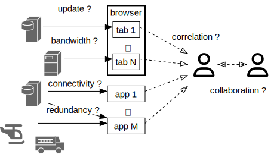
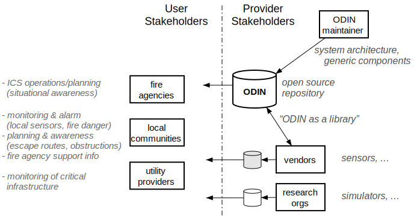
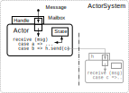
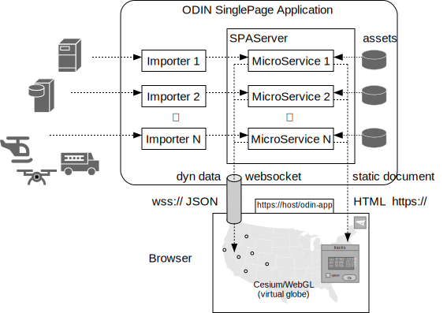
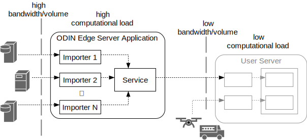
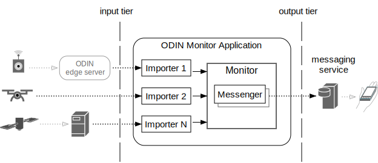

About this Document
this is the developer documentation for the open source ODIN project. Sources are available in the odin_book
directory of the general ODIN repository at https://github.com/ODIN-fire/odin-rs, which is distributed under the
Apache v2 license.
The html version can be viewed at http://odin-fire.github.io/odin-rs.
Sources of this book can be rendered and viewed offline by using mdbook
Build and Install
This Rust repository contains a Cargo workspace that consists of several sub-crates (odin_actor, odin_config, ..) that can be built or executed separately.
Prerequisites
-
Git - the version control system that is by now ubiqitous
-
Rust toolchain - we recommend to manage the toolchain via
rustupAt this point ODIN-RS uses the nightly toolchain. To get, (locally) installrustupand switch to the nightly toolchain execute:$> curl --proto '=https' --tlsv1.2 -sSf https://sh.rustup.rs | sh ... $> rustup default nightlyTo check if the basic Rust installation is working correctly you can create, build and run a simple test project by executing
$> cargo new my_test Creating binary (application) `my_test` package $> cd my_test $> cargo run Compiling my_test v0.1.0 ... ... Running `target/debug/my_test` Hello, world!Periodic updates of the toolchain can be done by executing
rustup updateTo install the
mdbooktool to compile and serve online documentation please run$> cargo install mdbookIf you are new to Rust you can find documentation and tutorials on https://www.rust-lang.org/learn. Information about the vast Rust ecosystem of available 3rd party libraries is available on https://crates.io.
-
GDAL - this native library is required if you run applications that use odin_gdal to process external input such as satellite data. The basic examples (e.g. from
hello_worldfrom odin_actor`) do not require it so you can leave this to the Next Steps section below but ultimately you probably need it for general odin-rs development so we recommend to install it upfront. GDAL should be installed through the native package manager of your system:- Linux: gdal packages are available for all major Linux distributions through their native package managers. Please note that Ubuntu 20.04 only supported old versions of GDAL which might require to install/build from source
- macOS: homebrew:
brew install gdal- make sure to install homebrew in its default location (/opt/homebrew/on Apple silicon) to avoid build problems with various GDAL dependencies - windows: vcpkg
-
odin-rs sources - downloadable via Git from https://github.com/ODIN-fire/odin-rs:
$> git clone https://github.com/ODIN-fire/odin-rs
Directory Structure
Since many ODIN applications require configuration or other data files at runtime it is recommended to keep the repository
and such files under a single root directory. To conform with the odin_build crate we recommend the
following structure:
.
└── ❬odin-root-dir❭/ created before cloning odin-rs
├── configs/... read-only data deserialized into config structs
├── assets/... read-only binary data served by ODIN app
├── data/... persistent runtime data for ODIN apps
├── cache/... transient runtime data for ODIN apps
│
└── odin-rs/... ⬅︎ directory into which ODIN source repository is cloned
The name of the ❬odin-root-dir❭ can be chosen at will. You can have several root dirs with different odin versions/branches and/or resource files. An installation as outlined above does not require any environment variables to be set.
Resource directories (configs/, assets/ and data/) can be populated upon demand later-on - please refer to the
odin_build documentation for further details.
On a Unix/macOS system this amounts to a sequence of commands like:
$> mkdir odin
$> cd odin
$> mkdir configs assets data cache
$> git clone https://github.com/ODIN-fire/odin-rs # or other odin-rs repository URL
...
$> cd odin-rs
Build instructions
Building and running ODIN-RS executables is normally done through the command line cargo tool which is installed by rustup as mentioned above. While ODIN-RS can be built directly from the directory where this repository was cloned to we recommend to switch to the respective crate you are interested in, e.g.
$> cd odin_actor
$> cargo run --example hello_world
Compiling ...
...
Running `.../odin-rs/target/debug/examples/hello_world`
hello world!
For IDEs and editors we recommend:
- Visual Studio Code with the Rust Analyzer extension - just choose "File->Open Folder" with the directory this repository was cloned to and you should be all set
- Zed - as a more editor oriented but faster GUI alternative (Zed is implemented in Rust)
- Helix - is a text-mode editor (i.e. works over ssh) that is implemented in Rust and can be installed as part of the Rust toolchain
To build/browse this documentation you have to install the Rust mdbook tool:
$> cargo install mdbook
...
$> cd odin_book
$> mdbook serve
2024-07-18 10:07:57 [INFO] (mdbook::book): Book building has started
2024-07-18 10:07:57 [INFO] (mdbook::book): Running the html backend
2024-07-18 10:07:57 [INFO] (mdbook::cmd::serve): Serving on: http://localhost:3000
...
Once the mdbook server is running you can view the latest version of the odin_book contents in any browser at http://localhost:3000
Next Steps
Most likely you are interested in odin-rs to run web applications. If those involve importing external geospatial data (e.g. NetCDF files)
and/or visualization on a virtual globe there are two additional 3rd party dependencies:
The first one is required to read/process many external geospatial data sets such as GOES-R hotspots or NOAA HRRR weather forecasts. There are native GDAL packages for Linux, macOS and Windows but the names depend on your native package manager (e.g. homebrew on macOS. vcpkg on Windows, or apt-get on Ubuntu Linux).
On macOS using homebrew this is:
brew install gdal
The CesiumJS install is optional. Per default build option respective odin-rs applications proxy the
CesiumJS server but for production environments it is recommended to download and strip the distribution to speed up load times and reduce
network downloads. The odin_cesium crate contains a install_cesium tool that can be used like so:
# from within odin-rs/
cd odin_cesium
mkdir -p ../../assets/odin_cesium
cargo run --bin install_cesium
This should leave you with a populated ../../assets/odin_cesium/cesiumjs/ directory. Since we do this to have a working production
environment it is also recommended to get a free Cesium Ion access token, copy the default
ODIN-ROOT/odin-rs/odin_cesium/assets/odin_cesium_config.js to ODIN-ROOT/assets/odin_cesium/ and edit it to set
Cesium.Ion.defaultAccessToken = "<YOUR ACCESS TOKEN HERE>";
...
You can read about assets and configs directories in odin_build and about Cesium in
odin_cesium. Other applications/crates (such as odin_sentinel) can require more assets and configs.
The above steps should be enough to run the next install test:
$> cd .../odin_goesr
$> cargo run --bin show_goesr_hotspots
...
Running `target/release/show_goesr_hotspots`
serving SPA on http://127.0.0.1:9009/goesr
If you open a browser tab on http://localhost:9009/goesr it should display a virtual globe with live updated hotspots
detected by GOES-R satellites (see odin_goesr for details). If you
click on the last icon in the upper left corner you should see a window showing the lates GOES-R data sets. If this shows
live data entries it means
- external data access is working (not blocked by firewall etc.)
- your GDAL installation to read this data is working
- the CesiumJS browser library is working
You can terminate the server with Ctrl-c.
As a last step you can test your local CesiumJS installation (obtained through install_cesium) by re-running the same
application with the respective cesium_asset build feature and release mode optimizations:
cargo run --features cesium_asset --release --bin show_goesr_hotspots
At this point you should have a fully functional odin-rs development system.
Known Installation Pitfalls
MacOS
wrong or Missing Xcode command line tools
On MacOS Rust does require reasonably updated Xcode command line tools. This problem manifests itself in different ways (e.g. CC link errors)
but early on. You can verify outside of odin-rs by running the cargo new my_test; cd my_test; cargo run test mentioned above.
The xtools command line tools can be installed as part of Xcode from the Apple AppStore or - if you already have Xcode - by running xcode-select –-install.
native GDAL package install fails
GDAL is a native library for geospatial image processing with a huge dependency set (tiff, jpeg, png, hdf5, netcdf etc.) and hence is updated quite frequently. It should be installed and updated through a native package manager, e.g. homebrew.
Since GDAL itself has a lot of dependencies it is highly recommended to use a standard homebrew installation (which on Apple silicon is in /opt/homebrew/). Non-standard locations might force buiding packages from source, which is prone to fail for complex packages such as python. While it is possible to build and install GDAL manually - and to configure odin-rs accordingly - we do not recommend this as it would still require a working homebrew for the GDAL dependencies. Please refer to the odin_gdal documentation
for how to build/use GDAL libraries from source.
Introduction
ODIN is a software framework to efficiently create servers that support disaster management.
More specifically it is a framework to build servers that import and process an open number of external data sources for information such as weather, ground-, aerial- and space-based sensors, threat assessment, simulation, vehicle/crew tracking and many more. The over-arching goal is to improve situational awareness of stakeholders by making more - and more timely - information available in stakeholder-specific applications. The main challenge for this is not the availability of data, it is how this data can be integrated in extensible and customizable applications.
We want to mitigate the information fragmentation- and compartmentalization problem. No more hopping between dozens of browser tabs. No more manual refreshes to stay up-to-date. No more printouts to communicate. No more take-it-or-leave-it systems that can't be extended.
ODINs goal is not to create yet another website that is supposed to replace all the ones that already exist. We want to enable stakeholder organizations to assemble their server applictions showing the information they need, with the capability to run those servers/applications on their machines (even out in the field if need be). We also want to do this in a way that makes it easy to integrate new data sources and functions as they become available from government, research organizations and commercial vendors. We want ODIN to be extensible, scalable, portable and - last not least - accessible.
To that end ODIN is open sourced under Apache v2 license. It is a library you can use and extend in your projects.
Stakeholders
Our vision for ODIN goes beyond a single stakeholder. We want it to be an open (freely available) platform for both users and developers. The ODIN maintainers are just one part of the puzzle, developing and maintaining the core framework other developers can build on. We only see our role in creating generic components that implement a consistent, extensible and scalable architecture.
User stakeholders are more than just responder organizations (of which there are many). We also envision local communities who want to improve their level of preparedness / disaster planning. Another example would be utility providers monitoring critical infrastructure. The common goal for such user stakeholders is to enhance their situational awareness but what information that entails depends on the specific incident type, stakeholder and location.
What holds for most user stakeholder organizations is that they lack the resources to develop respective systems from scratch. The stakeholders who do have development capacity often find themselves reinventing the wheel. The stakeholders who subscribe to commercial services have no way to tailor or extend such services.
There is no single organization that could develop all service components on its own. Commercial vendors come up with new sensors. Research organizations develop new forecast models and simulators. What holds for all such provider stakeholders is that they want to focus on their specific expertise. They don't want to duplicate existing functions just to make their products available. If they do so it just increases the information fragmentation problem we started with.
ODIN aspires to become the common ground on which stakeholders can meet - free, open and extensible for all.
Underlying SW Architecture/Design
To be that common basis ODIN needs a strong architectural foundation. Since ODINs main task is to collect and then process data from various independent external sources we need good support for concurrent computation - one of the most challenging topics for software development. ODIN meets this challenge by using the Actor Programming Model: asynchronously executing objects which only communicate through messages and don't share internal state (see odin_actor and The Actor Programming Model for details).
ODIN also has to work with existing software. There is a large collection of existing work we want to build on, such as fire-behavior and micro grid wind simulators (e.g. WindNinja) and general geospatial data processing libraries (e.g. GDAL). Given the binary nature of many of the underlying data formats, the need to efficiently use 3rd-party native libraries, the challenges of concurrent programming and the portability we strive for we chose Rust as the implementation platform as it gives us
- language intrinsic memory- and thread- safety
- a well defined Application Binary Interface
- a comprehensive cross-platform standard library
- a huge external eco-system
- good asynchronous programming support, both in the language and its libraries
- powerful abstraction features for large scale program design
- a mature, consistent tool chain (especially including dependency management)
- high efficiency / low system overhead (one of Rusts design goals is "zero cost abstraction")
What do we want to build on that basis?
ODIN Application Types
While ODIN contains all sort of command line tools, the primary targets are three types of applications:
- user servers - providing data visualization for end users
- edge servers - factoring out network-, compute- and data volume-intense tasks to dedicated machinery
- monitors - listening on sensor data and potentially sending out alarm notifications
All are built from the same ODIN components and follow the same architectural design outlined above.
User Servers
ODIN user servers are not supposed to handle millions of requests from large numbers of simultaneous but isolated users. The servers we mainly target support medium size workgroups of stakeholder users (<1000) with the need for:
- automatic data update (also for low latency tracking data)
- collaboration (synchronized views)
The main application model for user servers is a Single Page Application. The main user interface is a web browser - ODIN does not require end user installation and can be used on existing machinery.
A Single Page Application (SPA) mainly uses two types of actors: importers and a SPAServer. An Importer is a dedicated component to handle a single external data source, including data retrieval schedule and translation into ODIN internal format (if required). Importers are completely independent of each other which makes it simple to add new ones. Their results are sent via messages to a SPA-Server actor that distributes the information to connected users.
The SPA-Server actor utilizes MicroService objects that are managing static and dynamic content which is shown as separate layers on the served web page. Static content mostly consists of HTML and associated Javascript modules. It can be initialized from files or compiled into stand-alone executables and is served via http(s) protocol.
Stand alone ODIN SPA servers do not require any additional files/installation other than the executable itself (see odin_build for details). They can be thought of as traditional desktop applications that just use a browser as the user interface.
To ensure realtime update of low latency data (down to 1Hz) such as tracked objects ODIN utilizes WebSockets that are managed by the MicroService objects, and processed in the browser by ODINs Javascript modules (assets).
For geospatial display in the browser ODIN uses the open source CesiumJS library, which is built on top of WebGL and hence supports hardware accelerated 3D graphics to display a virtual globe.
ODINs user interface components such as (movable) windows, lists and buttons are implemented with ODINs own Javascript library that resembles a traditional desktop and is highly (user-) configurable.
Edge Servers
ODIN edge servers are the means to make ODIN applications scalable - they provide condensed/consolidated input data for user servers by factoring out high computational workloads and/or large input data volumes into dedicated machines with high speed network access. Edge servers are primarily used to reduce downstream processing and data volume.
Assume for instance micro-grid (location/terrain- aware) wind forecast for a given incident area, such as provided by WindNinja. This not only requires high speed machinery to execute the simulation but also needs significant bandwidth/connectivity to periodically obtain the required input data such as weather forecasts and station reports, high resolution digital elevation models, vegetation/fuel models and more. The user-facing results of the simulation can be compiled into relatively simple text (CSV) files containing a wind vector grid in the area of interest.
As a general rule we want to be able to run functions where the data is most easily accessible. For information that is obtained from sensors in the field (such as local tracking data) that can be a local incident command server. For functions that use large amounts of input such as NOAA weather forecasts this can be a high speed data center. For functions that are computationally expensive this should be a super computer.
Monitors
This class of applications mostly automates alarm notifications by monitoring sensor input to detect critical conditions, vetting them by sensor data post-processsing or retrieval of supporting evidence, eliminating duplicates, and then sending out notifications via 3rd party notification channels such as text messages or Slack channels.
Sensor input can be obtained from directly connected devices or from own or external edge servers.
Monitors can combine/correlate different sensor systems (e.g. ground based and satellite sensors).
Examples
To get an idea of what ODIN servers might look like on end user machines we refer to two of our TFRSAC talks:
Design Principles
To keep a complex and multi-disciplinary framework such as odin-rs consistent we have to adhere to a set of general design principles. The dominant ones for odin-rs are listed below.
Use existing libraries
The use of odin-rs generally falls into the cross section of several application domains such as
- (web) server/client development
- serialization/deserialization
- geo-spatial processing
- physical computation
- data visualization and user interfaces
- asynchronous programming
The Rust ecosystem contains substantial libraries for all these domains. Wherever
these libraries are stable, maintained, widely adopted and license compatible odin-rs should use them
to avoid not-invented-here syndrome. Not doing so means to dramatically increase the size of odin-rs
with functions that probably won't be based on the same domain expertise and won't be as well tested.
Using 3rd party libaries does come with caveats, namely dependency management and interface/type consistency.
To avoid dependency/version hell we have to ensure that
(1) we use Rust crates instead of native libraries wherever possible so that we can rely on the Rust build system to manage versions and features. This also means we can statically compile/link those dependencies which greatly reduces the risk of version hell.
(2) we try to keep the number of 3rd party dependencies low by using only established crates.
To mitigate the interface/type consistency problem that comes with using partly overlapping 3rd party libraries we use Rust language features, namely traits and the NewType pattern. The goal is to use Rust's "zero cost abstraction" features to add adapters that imply minimal (if any) runtime costs. The caveat here is to be aware where this might involve copying of aggregates and collections.
As of this time the strategic 3rd party crates used by odin-rs are:
- server/client development: Axum and Reqwest
- serialization/deserialization: serde
- geo-spatial processing: GeoRust - esp. geo and [gdal](https://docs.rs/gdal/latest/gdal/, nalgebra)
- physical computation: uom
- asynchronous programming: Tokio
These are defined as workspace dependencies (in the odin-rs Cargo.toml) to make sure versions are compatible
across all odin-rs sub crates.
The client code (browser scripts/modules) in odin-rs does not strictly follow the rule of using existing libraries. This code runs in many
different environments (browsers, operating systems, hardware) and has to be loaded over the network so we have to minimize
the amount of required code by adhering to what we strictly need. This also means to limit the client code to user interface
related functions and performing as much data processing as possible on the server side.
Where a separation is not entirely possible (e.g. to serve client library specific data/code) respective odin-rs sub-crates have to
be very limited in scope and purpose, and are not allowed to be a dependency for non-client dependent ones (see [odin_cesium] example).
That said there are (a) readily available standard browser APIs we have to use in order to be platform/browser independent, and (b) complex
geospatial display libraries that cannot be re-implemented in odin-rs. The former is the Document Object Model (DOM) that is supported by contemporary browsers. The latter is the virtual globe display for which we use CesiumJS. This is a serious 3rd party dependency and hence extra care has to be
taken to not let it proliferate into the server. This is achieved with the following principle.
Separate server- and client- side code
The primary purpose of the server is to import and process external data, and then serve it in a timely manner to connected clients. The client code should only be concerned about visualization and user interface.
To that end communication between the two is using standard protocols and data formats, namely HTTP and JSON over websockets. The ideal is to be able to re-implement each side without affecting the other.
Use the Rust type system to enforce correct semantics
Many domain-specific 3rd party Rust libraries do abstract the memory type of variables (e.g. f64) but do little to enforce
compatible units of measure (e.g. SI vs. Imperial). As a simple example, the correct use of angles entails
- memory type (e.g.
f64) - units (degrees or radians)
- semantics (e.g. use as latitude or longitude)
Again we can use the Rust type system to our advantage. By means of using uom types (such as
Length based on SI and f64), and/or by using the NewType pattern and overloadable Rust std::ops traits we can add specific types that catch most potential errors at compile time without introducing runtime overhead.
System Crates
As the name implies ODIN system crates provide functionality that is not directly associated to a specific application domain such as weather or even the general topic of disaster management. Most of them can be used for non-ODIN applications.
ODIN system crates can be divided into the following categories:
ODIN development
- odin_build - this crate is a build- and runtime dependency for other ODIN crates. It provides the mechanism to build stand-alone applications that do not rely on separate resource files
- odin_macro - this is collection of macros that implement domain specific languages
used especially by
odin_actor
cross-cutting functions
- odin_common - this is primarily a collection of cross-cutting functions that extend the Rust standard libraries and provide some basic capabilities such as admin notification
- odin_gdal - a crate that wraps and extends the GDAL library for geo-spatial data sets and images
- odin_dem - a simple digital elevation model based on GDAL VRT
architectural crates
- odin_actor - this crate implements a full actor system and is the architectural basis for most ODIN app crates
- odin_action - a crate that provides generic callbacks (used primarily to make actors inter-operable)
- odin_job - general system-global scheduling
- odin_server - this crate provides the building blocks to construct web server actors
- odin_share - crate that provides infrastructure to share data between services and users
client library support
- odin_cesium - this crate provides assets for client side virtual globe rendering with CesiumJS
odin_build
odin_build is a library crate that is used in a dual role both for utility functions called by ODIN crate specific
build scripts and at application runtime to locate resources and global directories.
Background
The primary use of ODIN is to create servers - either interactive web-servers or edge-servers used by other applications. To that end ODIN servers support four general categories of data:
- configs - essential runtime invariant configuration data (e.g. URIs and user credentials for external servers)
- assets - essential runtime invariant data that is served/used by ODIN (e.g. CSS and Javascript modules for web servers)
- data - global persistent data for ODIN applications that can change independently of the ODIN application using them
- cache - global transient data for ODIN applications (e.g. cached responses from proxied servers)
Configs and assets are essential resources, i.e. applications can rely on their existence (but not their values). For data and cache we only guarantee that respective directories exist at runtime - the use of those directories is up to individual applications.
Common to all categories is that such data can change independently of the ODIN Rust sources using them and hence do need a consistent, well defined lookup mechanism used throughout all ODIN applications. That mechanism is implemented in odin_build, mostly through four functions:
❬crate❭::load_config<C> (file_name: &str)->Result<C>(Cbeing the type of the requested, deserializable config struct)❬crate❭::load_asset (file_name: &str)->Result<Bytes>odin_build::data_dir()->&'static PathBufodin_build::cache_dir()->&'static PathBuf
The reason why the first two functions reside in the crates defining respective resources is that we also support stand-alone ODIN applications that can be distributed as single executable files, without the need to install (potentially sensitive) resource files (e.g. containing user authentication for 3rd party servers). This seems to be incompatible with that resource values can be changed independently of ODIN Rust sources.
To reconcile the two requirements we support a general build mode for ODIN applications that takes (at build-time) resource files and generates statically linked Rust sources from them. Generating source fragments for such embedded resources is done by build scripts utilizing functions provided by odin_build. The data flow is as follows:
┌────────────────┐
│crate odin_build│
└──────┬─────────┘
│ ┌─────────────────────┐
│ │ crate my_crate │ [cargo]
│ │ │ $OUT_DIR (../target/❬mode❭/build/A-../out/)
│ │ Cargo.toml (0) │ ┌─────────────┐
╰──────────┼─► build.rs ───(1)──┼───►│ config_data │
│ src/ │ └┬───▲──▲─────┘
│ ╭─ lib.rs ◄───(2)──┼─────╯ ╎ ╎
│ │ ... │ ╎ ╎
│ (3) bin/ │ ╎ ╎
│ ╰─► my_app.rs │ ╎ ╎ [user]
│ ... │ ╎ ╎ $ODIN_ROOT/
│ configs/ ╶╶╶╶╶╶╶╶╶┼╶╶╶╶╶╶╶╶╶╯ ╰╶╶╶╶╶╶ configs/
│ my_config.ron │ internal or external my_crate/
└─────────────────────┘ resource my_config.ron
This involves several steps:
(0) declaration of embeddable resources in Cargo.toml manifest of owning crates
The first step is to specify package meta data for embeddable resource files in the crates owning them (henceforth called resource crate):
[[bin]]
name = "my_app"
[package.metadata.odin_configs]
my_config = { file="my_config.ron" }
...
[package.metadata.odin_assets]
my_asset = { file="my_asset.js", bins=["my_app"] }
[features]
embedded_resources = []
...
The embedded_resource feature should be transitive - if the resource crate in turn depends on other ODIN resource crates we have to pass-down the feature like so: embedded_resources = ["❬other-odin-crate❭/embedded_resources" …]
(1) creation of embedded resource data
This step uses a build script of the resource crate to generate embedded resource code by calling functions from odin_built, showing its role as a build-time library crate:
use odin_build;
fn main () {
odin_build::init_build();
odin_build::create_config_data().expect("failed to generate config_data");
odin_build::create_asset_data().expect("failed to generate asset_data");
}
Note that using embedded resources requires the embedded_resources feature when building resource crates since it involves conditional compilation (more specifically feature-gated import!(❬embedded-resource-fragment❭) calls).
ODIN stores all embedded resource data in compressed format. Depending on resource file type data might be minified before compression.
(2) declaration of resource accessor functions in resource crates
At application runtime we use two macros from odin_build that expand into crate-specific public load_config(…) and load_asset(…) functions mentioned above.
use odin_build::{define_load_config,define_load_asset};
define_load_config!{}
define_load_asset!{}
...
If the application was built with the embedded_resources feature the expanded load_config(…) and load_asset(…) functions conditionally import the resource code fragments.
(3) use of resources
Using resource values at runtime is done through calling the expanded load_config(…) and load_asset(…) functions, which only require abstract resource filenames (not their location). The application source code is fully independent of the build mode:
fn main() {
odin_build::set_bin_context();
...
let config: MyConfig = load_config("my_config.ron")?;
...
let asset: &Vec<u8> = load_asset("my_asset.js")?;
}
Resource Lookup
We use the same algorithm for each individual resource file lookup during build-time and application run-time. This algorithm is implemented in odin_build::find_resource_file(…) and based on two main directory types of ODIN:
- root directories
- workspace directories
ODIN Root Dir
A root-dir is a directory that contains resource data that is kept outside of the source repository. ODIN applications are not supposed to rely on anything outside their root-dir but the user can control which root-dir to use (there can be several of them, e.g. for development and production)
We detect the root-dir to use in the following order:
- whatever the optional environment variable
ODIN_ROOTis set to - the parent of a workspace dir iff the current dir is (within) an ODIN workspace and this parent contains any of
cache/,data/,configs/orassets/sub-dirs. This is to support a self-contained directory structure during development, not requiring any environment variables - a
$HOME/.odin/otherwise - this is the normal production mode
An ODIN root-dir can optionally contain other sub-directories such as the ODIN workspace-dir mentioned below.
.
└── ❬odin-root-dir❭/
├── configs/ read-only data deserialized into config structs
│ ├── ❬resource-crate❭/
│ │ ├── ❬resource-file❭
│ │ └── ...
│ └── ❬bin-crate❭/
│ └── ❬resource-crate❭/
│ ├── ❬resource-file❭ bin specific override
│ └── ...
├── assets/ read-only binary data served by ODIN app
│ ├── ❬resource-crate❭/...
│ └── ❬bin-crate❭/...
│
├── data/ persistent runtime data for ODIN apps
│ └── ...
│
├── cache/ transient runtime data for ODIN apps
│ └── ...
│
└── ... (e.g. odin-rs/) optional dirs (ODIN workspace-dir etc.)
ODIN Workspace Dir
The workspace-dir is the top directory of an ODIN source repository, i.e. the directory into which the odin-rs Github repository was cloned. While the primary content of a workspace-dir are the ODIN crate sources, such crates can contain
configs and assets in case those should be kept within the source repository. This is typically the case for crates that serve/communicate with Javascript module assets - here we want to make sure asset and related ODIN Rust code are kept together.
The workspace-dir is the topmost dir that holds a Cargo.toml, starting from the current dir.
A workspace-dir follows the normal cargo convention but adds optional configs/ and assets/ sub-directories to respective workspace crates:
.
└── ❬odin-workspace-dir❭/
├── Cargo.toml ODIN workspace definition
├── ❬crate-dir❭/
│ ├── Cargo.toml including odin_configs and odin_assets metadata
│ ├── build.rs calling odin_build functions
│ ├── src/... normal Cargo dir structure
│ │
│ ├── configs/ (optional) in-repo config resources for this crate
│ │ ├── ❬resource-file❭
│ │ └── ...
│ └── assets/ (optional) in-repo asset resources for this crate
│ ├── ❬resource-file❭
│ └── ...
├── ... other ODIN crates
└── target/... build artifacts
With those directory types we can now define the resource file lookup algorithm:
File Lookup Algorithm
For each given tuple
- root-dir (ODIN_HOME | workspace-parent | ~/.odin)
- (optional) workspace-dir
- resource type ("configs" or "assets"),
- resource filename,
- resource crate and
- (optional) bin name + crate
check in the following order:
- root-dir / resource-type / bin-crate / bin-name / resource-crate / filename
- root-dir / resource-type / resource-crate / filename
- workspace-dir / resource-type / bin-crate / bin-name / resource-crate / filename
- workspace-dir / resource-type / resource-crate / filename
This is implemented in the odin_build::find_resource_file(…) function which returns an Option<PathBuf>.
Runtime Resource Lookup Algorithm
At application runtime we optionally extend the above file system lookup mechanism by checking for an embedded resource within the resource-crate iff no file was found with the above algorithm.
By setting a runtime environment variable ODIN_EMBEDDED_ONLY=true we can force the lookup to only consider embedded resources (i.e. to ignore resource files in the file system).
This lookup is performed for each resource separately, i.e. it is not just possible but even usual to have resources to reside in different locations (root dir and workspace dir). Typically only configs with user settings or credentials are kept outside the repository whereas assets are kept within. The main exception would be development/test environments.
ODIN Environment Variables
At runtime, ODIN applications use the following optional environment variables:
ODIN_HOME- the ODIN root directory to useODIN_EMBEDDED_ONLY- use only embedded configs, no file system lookupODIN_BIN_SUFFIX- optional suffix for binary name (can be used to differentiate multiple concurrentODIN_BIN_NAME/CARGO_BIN_NAMEprocesses)ODIN_RELOAD_ASSETS- if set asset lookup is not cached (useful for debugging javascript modules)
At build-time, ODIN uses the following environment variables to provide build script input
ODIN_BIN_CRATE- set manually or by ODIN build toolODIN_BIN_NAME- set manually or by ODIN build toolODIN_EMBED_RESOURCES- set manually or by ODIN build toolOUT_DIR- automatically set by cargoCARGO_PKG_NAME- automatically set by cargoCARGO_BIN_NAME- automatically set by cargo for bin target
ODIN build tools
To further simplify building applications with embedded resources odin_build includes a tool that automates setting required environment variables, calling cargo and reporting embedded files:
bob [--embed] [--root ❬dir❭] [❬cargo-opts❭...] ❬bin-name❭
--embed : build binary with embedded resources
--root ❬dir❭ : set ODIN root dir to embed resources from
Using this tool is optional. ODIN applications can be built/run through normal cargo invocation but in this case resources are not embedded without manually setting the above ODIN_.. build-time environment variables and the embedded_resources feature.
Although provided by the odin_common crate the duplicate_dir command line tool can be used to duplicate nested ODIN_ROOT directory trees. Use
the --link-files option to create root dirs that only override some config/asset files and otherwise link to an existing root dir:
duplicate_dir [FLAGS] [OPTIONS] <source-dir> <target-dir>
FLAGS:
-h, --help Prints help information
-l, --link-files only use symbolic (soft) links for files
-V, --version Prints version information
OPTIONS:
-e, --exclude <exclude>... exclude file or directory matching glob
ARGS:
<source-dir> root directory to duplicate
<target-dir> directory to duplicate to (will be created/overwritten)
odin_action
The odin_action crate provides several variants of action types together with macros to define and instantiate ad
hoc actions. The generic action construct represents application specific objects that encapsulate async
computations, to be executed by an action owner that can invoke such computations with its own data (e.g. sending
messages in actor systems that are built from its data).
The primary purpose of actions is to build re-usable action owners that do not have to be aware of in which application context they are used. All the owner has to know is when to execute an action and what of its own data it should provide as an argument.
In a synchronous world this is often described as a "callback".
The basis for this are "Action" traits with a single async fn execute(&self,data..)->Result<()> method. Instances of
these traits are normally created where we assemble an application (e.g. in main()), i.e. where we know all the
relevant interaction types. They are then passed either as generic type constructor arguments or later-on (at runtime)
as trait objects to their owners, to be invoked either on-demand or when the owner state changes.
Technically, actions represent a special case of async closures in which capture is done by either Copy
or Clone. Reference capture is not useful here since actions are executed within another task, without any
lifetime relationship to the context in which the actions were created.
We support the following variants:
- [
DataAction<T>] trait and ['data_action`] macro - [
DataRefAction<T>] trait and ['dataref_action`] macro - [
BiDataAction<T,A>] trait and [bi_data_action] macro - [
BiDataRefAction<T,A>] trait and [bi_dataref_action] macro - [
DynDataAction<T>] type and ['dyn_data_action`] macro - [
DynDataRefAction<T>] type and ['dyn_dataref_action`] macro
The difference between ..DataAction and ..DataRefAction is how the owner data is passed into the trait's
execute(..) function: as a moved value (execute(&self,data:T)) or as a reference (execute(&self,data:&T)).
The Bi..Action<T,B> traits have execute(..) functions that take two arguments (of potentially different types). This is
helpful in a context where the action body requires both owner state (T) and information that was passed to the
owner (B) in the request that triggers the action execution and can avoid the runtime overhead of async action trait
objects (requiring Pin<Box<dyn Future ..>> execute return values). The limitation of bi-actions is that both
action owner and requester have to know the bi_data type (B), which therefore tends to be unspecific (e.g. String).
This in turn makes bi-actions more susceptible to mis-interpretation and therefore the action owner should only use
B as a pass-through argument and not generating it (which would require the owner knows what potential requesters
expect semantically).
Dyn..Action types (which represent trait objects) are used in two different contexts:
- to execute actions that were received as function arguments (e.g. through async messages)
- to store such actions in homogenous
Dyn..ActionListcontainers for later execution
The Dyn..ActionList containers use an additional ignore_err: bool argument in their execute(..) methods
that specifies if the execution should shortcut upon encountering error results when executing its stored actions
or if return values of stored actions should be ignored.
#![allow(unused)] fn main() { struct MyActor { ... data: MyData, actions: DynDataActionList<MyData> } ... impl MyActor { async fn exec (&self, da: DynDataAction<MyData>) { da.execute(&self.data).await; } fn store (&mut self, da: DynDataAction<MyData> ) { .. self actions.push( da) .. } ... self.actions.execute(&self.data, ignore_err).await ... } }
Note that Dyn..Action instances do have runtime overhead (allocation) per execute(..) call.
Since actions are typically one-of-a-kind types we provide macros for all the above variants that both define the type and return an instance of this type. Those macros all follow the same pattern:
#![allow(unused)] fn main() { //--- system construction site: let v1: String = ... let v2: u64 = ... let action = data_action!{ let v1: String = v1.clone(), let v2: u64 = v2 => |data: Foo| { println!("action executed with arg {:?} and captures v1={}, v2={}", data, v1, v2); Ok(()) } }; let actor = MyActor::new(..action..); ... //--- generic MyActor implementation: struct MyActor<A> where A: DataAction<Foo> { ... action: A ... } impl<A> MyActor<A> where A: DataAction<Foo> { ... let data = Foo{..} ... self.action.execute(data).await ... } }
the example above expands into a block with three different parts: capture struct definition, action trait impl and capture struct instantiation
#![allow(unused)] fn main() { { struct SomeDataAction { v1: String, v2: u64 } impl DataAction<Foo> for SomeDataAction { async fn execute (&self, data: Foo)->std::result::Result<(),OdinActionError> { let v1 = &self.v1; let v2 = &self.v2; println!(...); Ok(()) } } SomeDataAction{ v1: v1.clone(), v2 } } }
The action bodies are expressions that have to return a Result<(),OdinActionError> so that we can coerce errors in crates using
odin_action. This means that we can use the ? operator to shortcut within action bodies, but we have to map respective results
by means of our map_action_err() function and make sure to use action_ok() instead of explicit Ok(()) (to tell the compiler
what Result<T,E> it refers to):
#![allow(unused)] fn main() { fn compute_some_result(...)->Result<(),SomeError> {...} ... data_action!( ... => |data: MyData| { ... map_action_err( compute_some_result(...) )? ... action_ok() }) }
For actions that end in a result no mapping is required (map_action_err(..) is automatically added by the macro expansion):
#![allow(unused)] fn main() { data_action!( ... => |data: MyData| { ... compute_some_result(...) }) }
[OdinActionError] instances can be created from anything that implements [ToString]`
odin_actor
The odin_actor crate provides an implementation of a typed actor model
that serves as the common basis for ODIN applications.
Actors are objects that execute concurrently and only communicate through asynchronous Messages. Actors do not share their internal State and are only represented to the outside by ActorHandles. The only operation supported by ActorHandles is to send messages to the actor, which are then queued in an (actor internal) Mailbox and processed by the actor in the order in which they were received. In reaction to received messages actors can send messages or mutate their internal state:
╭──────╮
─────▶︎│Handle│─────x:X──╮ Message
┌─┴──────┴──────────│───┐
│ Actor State ┌─▼─┐ │
│ ▲ ├─:─┤ MailBox
│ │ └───┘ │
│ ▼ │ │
│ receive(m) ◀︎────╯ │
│ match m │
│ X => process_x │
│ ... ───────────▶︎ send messages to other actors
└───────────────────────┘
From a Rust perspective this is a library that implements actors as async tasks that process input received through actor-owned channels and encapsulate actor specific state that is not visible to the outside. It is an architectural abstraction layer on top of async runtimes (such as tokio).
In odin_actor we map the message interface of an actor to an enum containing variants for all message types
understood by this actor (variants can be anything that satisfies Rust's Send trait). The actor state is a user
defined struct containint the data that is owned by this actor. Actor behavior defined as a trait impl that
consists of a single receive function that matches the variants of the actor message enum to user defined expressions.
Please refer to the respective chapter in the odin_book for more details.
The odin_actor crate mostly provides a set of macros that implement a DSL for defining and instantiating these
actor components, namely
- [
define_actor_msg_set] to define an enum for all messages understood by an actor - [
impl_actor] to define the actor as a 3-tuple of actor state, actor message set and areceivefunction that provides the (possibly state dependent) behavior for each input message (such as sending messages to other actors) - [
spawn_actor] to instantiate actors and start their message receiver tasks
Here is the "hello world" example of odin_actor, consisting of a single Greeter actor:
use tokio; use odin_actor::prelude::*; // define actor message set ① #[derive(Debug)] pub struct Greet(&'static str); define_actor_msg_set! { pub GreeterMsg = Greet } // define actor state ② pub struct Greeter { name: &'static str } // define the actor tuple (incl. behavior) ③ impl_actor! { match msg for Actor<Greeter,GreeterMsg> as Greet => term! { println!("{} sends greetings to {}", self.name, msg.0); } } // instantiate and run the actor system ④ #[tokio::main] async fn main() ->Result<()> { let mut actor_system = ActorSystem::new("greeter_app"); let actor_handle = spawn_actor!( actor_system, "greeter", Greeter{name: "me"})?; actor_handle.send_msg( Greet("world")).await?; actor_system.process_requests().await?; Ok(()) }
This breaks down into the following four parts:
① define actor message set
② define actor state
③ define the actor tuple (incl. behavior)
④ instantiate and run the actor system
The Actor Programming Model
Actors represent a concurrency programmming model that avoids shared memory between concurrent (and possibly parallel) executions by means of message passing. Since its introduction in [^Hewitt73] it has been the subject of extensive formalization but the essence is that
actors are concurrently executing objects that only communicate through messages, without sharing state
In addition, existing actor implementations also ensure that messages received by an actor are processed sequentially, which basically allows to treat an actor implementation as sequential code. This significantly reduces the concurrency related complexity of systems that use actors as their primary building blocks.
The Actor programming model as used by odin_actor revolves around five components:
- an ActorSystem that instantiates and manages actors
- the Actors themselves as the units of concurrent execution
- ActorHandles as the public-facing actor component
- actor mailboxes that represent the (internal) message queues of actors
- actor state as the mutable, internal memory of an actor
- a receive(msg) function that defines how the actor processes received messages
ActorSystems instantiate and monitor actors. In concrete implementations they include some scheduler that picks
runnable actors (with pending messages) and maps them to kernel threads. They can also be used to manage global
resources (such as job schedulers) and perform actor synchronization (i.e. implement ActorSystem specific actor
state models)
Actors are the concurrently executing entities. An actor aggregates a usually invisible mailbox (message queue),
an actor state that holds the (mutable) actor-specific data and a receive(msg) message handler function that can
in response to received messages
- mutate the actor state
- create other actors
- send messages to other actors
It should be noted that Actors are an abstract concept - concrete ActorSystem implementations have considerable leeway to implement them. They can use message queues and actor state outside of physical actor objects. Actors can even be implemented as "behavior" function objects that pass in the state as a message handler argument, and use the message handler return value to set the next behavior and/or state.
ActorHandles represent the visible reference of an actor towards other actors and the actor system. The role of an ActorHandle is to allow sending messages to the associated actor without exposing its internal state or directly affecting its lifetime.
The original actor programming model is abstract. It does not concern itself with implementation specifics such as type safety, e.g. to statically check that we can only send messages to actors that can handle them. However, those programming language specific aspects can have a profound impact on genericity and safety of actor system frameworks (e.g. to ensure that we do not leak actor state through references passed in messages).
Concrete implementations should also specify
- mailbox/send semantics (unbounded -> non-blocking send, bounded -> blocking when receiver queue is full)
- message processing order (e.g. sequential-per-sender)
Especially the first topic is relevant to address potential back-pressure in actor systems (slow receivers blocking fast senders).
[^Hewitt73] : Carl Hewitt; Peter Bishop; Richard Steiger (1973). "A Universal Modular Actor Formalism for Artificial Intelligence". IJCAI.
Basic Design
This chapter describes how the general actor constructs introduced in actor_basics are implemented in odin_actor,
which reflects our major design choices:
- map each actor into a dedicated async task that owns the actor state
- use an actor specific enum type to define the set of messages that can be sent to/are processed by this actor (each message type is wrapped into a tuple struct variant of this enum)
- use bounded multi-producer/single-consumer (MPSC) channels of this message set enum to implement actor mailboxes
- wrap the sender part of the channel into a (cloneable) actor handle and move the receiver part and the actor state into the task function, which loops to process received messages
- use normal enum matching to dispatch messages from within the actor task
- use the actor handle to send messages to the associated actor
This ensures our basic requirements:
- actor message interfaces can be checked at compile time - we can only send messages to actors who process them, and each actor processes all of the message types in its interface
- actor state cannot accidentally leak from within its task (neither during construction nor while sending messages)
- actors can process concurrently (and - depending on async runtime and hardware - in parallel)
- message processing back pressure is propagated (bounded channel write blocks until receiver is ready), the system related memory per actor is bounded (no out-of-memory conditions because of "hung" actors)
The remainder of this page looks at each of the actor elements: messages, mailboxes, actors (handles and state) and actor systems.
Messages and Actor Message Sets
Messages are ordinary structs, they do not require any odin_actor specific overhead other than that they for obvious reasons
have to be Send and have to implement Debug (odin_actor requirement to support debug/logging).
The odin_actor crate does define a number of system messages for lifetime control and monitoring purposes (_Start_,
_Pause_, _Resume_, _Timer_, _Exec_, _Ping_, _Terminate_). Those messages do not have to be handled explicitly by actors (although
they can, should the actor require specific actions). System messages can be sent to any actor.
Message sets are the complete message interfaces of their associated actors. They are implemented as enums since we
want to be able to statically (at compile time) check that
- an actor processes all message types in its interface (no "forgotten" messages)
- we can only send messages to actors who have this message type in their interface
Other than for actor definition message set enums are mostly transparent, which means they need From<msg-type> impls for all their
variants. Message sets have to include the system messages mentioned above. Since this would be tedious to define explicitly we provide
the define_actor_msg_set!(..) macro that can be used like so:
#![allow(unused)] fn main() { use odin_actor::prelude::*; #[derive(Debug)] struct MsgA(usize); #[derive(Debug)] struct MsgB(usize); define_actor_msg_set! { MyActorMsg = MsgA | MsgB } ... }
This gets expanded to an enum type with From<T> impls for each of its variants:
#![allow(unused)] fn main() { ... enum MyActorMsg { MsgA(MsgA), MsgB(MsgB) } impl From<MsgA> for MyActorMsg {...} impl From<MsgB> for MyActorMsg {...} ... }
The macro also adds variants for the system messages so that we can send them to each actor.
Apart from automatic From<..> impls the main operation performed on message set enums is matching their variants inside of
actor receive() functions. To avoid boilerplate and to make the code more readable we provide support matching on variant
types from within the impl_actor! {..} macro:
#![allow(unused)] fn main() { impl_actor! { match msg for Actor<MyActor,MyActorMsg> as MsgA => cont! { // process msg: MyActorMsg::MsgA } ... _Start_ => cont! { // process msg: MyActorMsg::_Start_ } }
However, Rust enum variants are not types, hence the framework automatically has to map type names (from the match arm patterns)
to variant identifiers, which requires name mangling in case of generic types and tuples. This name mangling is performed automatically
and uses similar valid unicode identifier characters (see odin_macro implementation) to ensure that compiler error messages are still
readable.
It should be noted that since we use enums to define message sets developers should be aware of the variant type sizes - Rust enums
are sized to accommodate the largest of their variants and mailboxes represent arrays of respective message set enums. Use Arc<MyLargeType> in case variants can get large.
Mailboxes
Mailboxes are implemented as Rust channels, i.e. odin_actor does not provide its own type and uses (transparently) whatever the
configured channel implementation default to (e.g. flume::bounded). This is
controlled at build time by odin_actor features (currently tokio_kanal or tokio_flume).
The odin_actor crates uses bounded channels, i.e. we do not support dynamically sized mailboxes. The rationale is to use mailbox
bounds for back pressure control and to prevent out-of-memory errors at runtime. This also means we have to support three types
of message sends:
- async send (potentially blocking until space becomes available)
- try_send (non-blocking but fails if mailbox is full)
- timeout_send (async with a specified max timeout - in between the above two choices)
ActorHandle
ActorHandle is a system provided struct with a type parameter that represents the actor message set type. This type
is used to define the sender-part of the actor mailbox (mpsc channel - see Actor section below), which in
turn is what makes our actor message interfaces type safe (at compile time).
#![allow(unused)] fn main() { pub struct ActorHandle <M> where M: MsgTypeConstraints { pub id: Arc<String>, hsys: Arc<ActorSystemHandle>, tx: MpscSender<M> // internal - this is channel specific } }
Since ActorHandle is primarily used to send messages to the corresponding actor the main functions in its inherent impl are:
async fn send_msg<T> (&self, msg: T)->Result<()> where T: Into<M> {...}async fn timeout_send_msg<T> (&self, msg: T, to: Duration)->Result<()> where T: Into<M> {...}pub fn try_send_msg<T> (&self, msg:T)->Result<()> where T: Into<M> {...}
Note that all are generic in the message type T: Into<M>, i.e. any type for which the respective actor message set M
has a From trait impl (which our define_actor_msg_set!(..) macro automatically generates).
ActorHandles have one basic requirement - they have to be inexpensive to clone. For that reason we use Arc<T> references
to store the id (name) and the ActorSystemHandle of the respective actor.
ActorHandles are not created explicitly - they are the return values of spawn_actor!{..} or spawn_pre_actor!{..} macro
calls.
The system also provides a PreActorHandle<M> struct that allows explicit construction in case we have cyclic dependencies
between actors. The sole purpose of PreActorHandle is to subsequently create ActorHandles from it. To that end it creates
and stores both sender and receiver parts of the actor task channel but it does not allow to use them - all its fields are private
and are just used as a temporary cache. The spawn_pre_actor!{..} macro is used to spawn actors from respective PreActorHandles.
Actor State
Just like the for the message types odin_actor accepts any struct as actor state, without the need for any specific
fields or trait impls.
There usually is an associated inherent impl for such structs which defines the functional interface of the actor. A common pattern is to use minimal code in the actor impl itself and just call actor state methods from the message match expressions like so:
#![allow(unused)] fn main() { struct MyActor {...} impl MyActor { fn process_msg_a (&mut self, msg: MsgA) { ... } ... } impl_actor! { match msg for Actor<MyActor,MyActorMsg> as MsgA => cont! { self.process_msg_a( msg) } ... } }
Actor
The odin_actor crate uses a single generic actor type
#![allow(unused)] fn main() { pub struct Actor <S,M> where S: Send + 'static, M: MsgTypeConstraints { pub state: S, pub hself: ActorHandle<M>, } }
where the type variable S represents the user defined actor state type and the type variable M represents the actor
message set type defined by a corresponding define_actor_msg_set!(..) invocation. The Actor type itself is mostly transparent,
usually it is only visible at the location where a concrete actor is defined with the impl_actor! { ... } macro.
To avoid boilerplate in the associated message matcher code odin_actor provides blanket Deref and DerefMut impls that
forward to the state: S field. For the most part, developers can treat actor and actor state synonymously.
One consequence of not having constraints on the actor state type and keeping system related data in the framework provided
Actor<S,M> struct is that we need to pass actor handles into inherent impl methods like so:
#![allow(unused)] fn main() { struct MyActor {...} impl MyActor { async fn send_something (&mut self, hself: &ActorHandle<MyActorMsg>) { hself.send_msg(...).await } ... } impl_actor! { match msg for Actor<MyActor,MyActorMsg> as ... => cont! { self.send_something( &self.hself).await } ... } }
We define concrete Actor types by means of our impl_actor!{..} macro, which has the primary purpose of generating
a ActorReceiver<M> trait impl for the concrete Actor type. This trait defines the function
#![allow(unused)] fn main() { fn receive (&mut self, msg: MsgType)-> impl Future<Output = ReceiveAction> + Send }
which is our actor message dispatcher (a matcher on the actor message set enum variants).
Once it is spawned at runtime the Actor is moved into its own Tokio task. Since the Actor owns the actor state S this
guarantees actor encapsulation - it is not visible to the outside anymore. The task in turn consists of a loop that awaits
incoming messages from the actor mailbox (task channel reader part) and then dispatches the message through the receive()
function of the ActorReceiver impl.
Each receive match arm has to return a ReceiveAction enum that tells the task how to proceed:
ReceiveAction::Continuecontinues to loop, waiting for the next message to receiveReceiveAction::Stopbreaks the loop and terminates message processing for this actor. This is the default result when dispatching_Terminate_system messagesReceiveAction::RequestTerminationsends a termination request to the associatedActorSystembut continues to loop. TheActorSystemin turn sends_Terminate_messages to all its actors in response
The system provides the cont!{..}, stop!{..} and term!{..} macros as syntatic sugar to make sure match arm expressions
do return respective ReceiveAction values.
ActorSystem
Spawning actor tasks and transferring ownership of its Actors is the responsibility of the system provided ActorSystem
struct. Its main function therefore is spawn_actor(..) which is normally just called by the spawn_actor!{..} macro that
transparently
- creates a MPSC channel for the actor message set type
- creates an
ActorHandlethat stores the sender part of the channel - creates an
Actorfrom the provided actor state object and theActorReceiverimpl generated by the associatedimpl_actor!{..}call (which means it has to be in scope at the point of thespawn_actor{..}call so that the compiler can deduce the message type set) - spawns a new task with the system provided
run_actor(..)task function, moving both theActorand the receiver part of the MPSC channel into this task
The ActorSystem also keeps track of all running actors as a list of SysMsgReceiver trait objects. This means
ActorSystem can only interact with Actors by sending system messages. For this purpose ActorSystem has its own
task that processes ActorSystemRequest messages, of which the ActorSystemRequest::RequestTermination (sent by
run_actor in response to a ReceiveAction::RequestTermination return value from the actor receive() function) is
the most common one.
Based on its list of SysMsgReceivers the ActorSystem also manages heart beats (system liveness monitoring) and
a build-time configurable user interface to display the system status. Both are transparent to the application.
ActorSystem is the primary object for actor based applications, which all follow the same general structure:
... #[tokio::main] async fn main() ->Result<()> { // create the actor system let mut actor_system = ActorSystem::new("main"); // spawn actors let handle_a = spawn_actor!( actor_system, "A", ActorA{..})?; let handle_b = spawn_actor!( actor_system, "B", ActorB{..})?; ... // run the actor system actor_system.start_all().await?; actor_system.process_requests().await?; Ok(()) }
There are two underlying abstractions that can be varied for an ActorSystem implementation: async runtime and actor
task channel type. Both are configured by a Cargo build feature
and provide the same interface. At this time we support
- the default
tokio_kanal(Tokio runtime and Kanal MPSC channel type) tokio_flume(using the Flume MPSC channel type)
Within the same process only one combination can be used.
Actor Communication
Actors don't live in isolation - their whole purpose is to build modular, scalable concurrent systems out of sets of communicating actors. We therefore need to define
- what can be sent between actors (messages),
- how we can send messages
- how to program sender actors when, what and to whom messages should be sent
Moreover, in odin_actor we need to do this in a type-safe, statically checked way. Since our implementation language
is Rust we want to ensure that
- we can only send thread- and memory-safe messages
- we can only send messages to actors that handle them (are in the receiver's message interface)
- each actor behavior is complete (no forgotten messages in the actor implementation)
- actors combine (we can build systems out of generic actors that only need to know a minimum about each other)
While the first three requirements are supported by Rust in a straight forward way, the forth requirement is complex. Let's take it one step at a time.
Messages
This one is easy - odin_actor does not have a specific message type or trait. Anything that is Send + Debug +
'static can be a message. The Send constraint is obvious as we pass messages between concurrent tasks (actors).
TheDebug constraint is only for generic tracing/debugging support. The message type needs to be static since it is
part of the receiver actors definition. Some message sender methods do also require Clone as all sender methods do
consume the message argument. Should cloning be inefficient the message can also be an Arc<T>.
Since an actor typically processes more than one message we need to wrap all of its input message types into an enum.
This message set becomes part of the generic Actor<MsgSet,ActorState> type. Defining the message set is supported by
the define_actor_msg_set!{..} macro:
#![allow(unused)] fn main() { define_actor_msg_set! { MyActorMsg = Msg1 | Msg2 } }
which roughly expands to
#![allow(unused)] fn main() { // automatically generated code enum MyActorMsg { Msg1(Msg1), // user messages... Msg2(Msg2), _Start_ (_Start_), // system messages... ... _Terminate_ (_Terminate_) } impl From<Msg1> for MyActorMsg { ... } impl From<Msg2> for MyActorMsg { ... } ... }
The macro automatically adds variants for each of the system messages
_Start_- sent by theActorSystemto indicate that all actors have been instantiated and should start to process_Timer_- sent by timers created from within the actor_Exec_- a generic message that executes the provided closure within the actor task_Pause_and_Resume_- can be used by actor systems that replay content_Terminate_- sent by theActorSystemto indicate the application is about to shut down
System messages don't need to be explicitly handled. They are sent either by the ActorSystem (e.g. _Start_) or
implicitly by Actor methods such as start_timer(..) or exec(..).
The message set name (e.g. MyActorMsg) is then used to define the actor like so:
#![allow(unused)] fn main() { impl_actor! { match msg for Actor<MyActorMsg,MyActorState> as Msg1 => ... // handle message 'msg' of type 'Msg1' Msg2 => ... } }
Both define_actor_msg_set!{..} and impl_actor!{..} automatically translate generic message types (e.g. Query<Q,A>)
into valid variant names of the actor message set. Although this mapping is readable and intuitive the programmer does not
need to know (other than to understand related compiler error messages).
Using an enum to encode all possible input messages for an actor also explains why message types should not be large. Not
only would this increase clone() cost but it also would enlarge the message set enum, which is sized according to its largest
variant.
Since this message set enum is the type of the actor mailbox (channel) this size matters - a Rust enum is sized according to
its largest variant. If the ratio of max to min size of variants is too large then the channel can waste a lot of memory. If this is a problem we can always wrap (part of) large messages within heap-allocated containers (Box, Arc, Vec etc.) which collapses the size of the wrapped data to a pointer.
How to Send Messages
Actor mailboxes in odin_actor are implemented as bounded async channels. This means sending messages can block the
sender if the receiver queue is full. Since it depends on the actor/message types if this is acceptable we need to support
alternative send operations:
send_msg(msg)- this is anasyncfunction that can suspend the sender and hence can only be called from anasynccontexttimeout_send_msg(msg,timeout)- alsoasyncbut guaranteed to finish in bounded time, possibly returning a timeout errortry_send_msg(msg)- sync call. returning an error of the receiver queue is fullretry_send_msg(max_attempts,delay,msg)- also sync but re-scheduling the message if receiver queue is full
It is important to note that retry_send_msg(..) can violate the property that messages from the same sender are
processed by the receiver in the order in which they were sent. If partial send order is required this has to be
explicitly enforced in the sender.
All send operations return Result<(),OdinActorError> values. Senders should handle ReceiverClosed and - for async sends -
ReceiverFull and/or Timeout error values.
Send methods are defined in ActorHandle, MsgReceiver and Actor (the latter one used to send messages to itself).
Normal message send operations are unidirectional - should the sender expect a response that needs to retain request information the responder has to do this association explicitly (e.g. by copying relevant request info into the response message, or by keeping a list of pending requests in the sender).
Waiting for a Response - Query<Q,A>
The bi-directional query(..) operations overcome this restriction in cases where the sender should wait for a response
before going on. The underlying message type is a generic Query<Question,Answer> struct which has to be in the
responders input message set, the concrete Question and Answer types being provided by the user (with normal message
type constraints).
The requester sends queries like so:
#![allow(unused)] fn main() { ... let question = ... match query( responder_handle, question).await { Ok(response) => ... // process response value Err(e) => ... // handle failed query } }
The corresponding responder code would be:
#![allow(unused)] fn main() { define_actor_msg_set! { ResponderMsg = ... | Query<Question,Answer> | ...} impl_actor!{ match msg for Actor<ResponderMsg,ResponderState> as ... Query<Question,Answer> => { let answer = ... if let Err(e) = msg.respond( answer).await { ...// handle response send error } } } }
In many other actor system libraries this is known as the ask pattern.
If the requester message processing should not be blocked (i.e. there are other messages the requester still has to react to while waiting for a response) the query should be performed from a spawned task. Since the task closure can capture the query context (e.g. the question) this can still be preferrable to explicit request/response mapping for one-way messages.
Due to this round trip (and potential per request response channel allocation) queries are less efficient than
normal message send operations. For repetitive queries from within the same requester there is a QueryBuilder
that avoids the response channel allocation for consecutive queries of the same type.
How to Make Senders Generic - Receivers and Actions
This is the big topic for typed actor communication in (open) actor system frameworks:
how to connect actors from different domains that do not know about each other?
In other words - how do we make actors in open actor systems reusable in different contexts. This is not a
problem if actors are just used in a single application or a single domain (such as a generic web server) - here the set
of actor and message types is closed and known a priori. It becomes a vital problem for a framework such as odin_actor
that is meant to be extended by 3rd parties and for various kinds of applications.
This section describes the levels at which we can separate sender and receiver code in odin_actor,
The basis for all this is how we can specify the receiver of a particular message within the sender
(1) ActorHandle<M>
ActorHandle<M> fields can be used to send messages of any variant of the message set that is defined by the
define_actor_msg_set macro:
#![allow(unused)] fn main() { define_actor_msg_set!{ MyMsgSet = Msg1 | Msg2 | ..} ... impl_actor! { match msg for Actor<MyMsgSet,MyActorState> as Msg1 => ... Msg2 => ... ... } }
This is the least amount of separation between sender and receiver since the sender has to know the full message
interface of the receiver (e.g. MyMsgSet), not only the message it wants to send (e.g. Msg2). In most cases this is
synonym to knowing the concrete type of the receiver actor, which practically limits this mechanism to very general
receivers or to actors from the same domain (i.e. actors that know about their concrete types anyways).
ActorHandle<M> is a struct that is Clone + Send, hence it can be sent in messages and stored in fields.
Cloning ActorHandle is inexpensive.
Normally ActorHandles are created by calling our spawn_actor!(..) macro. Sometimes we need to create an
ActorHandle before we can spawn the actor, e.g. if there are cyclic dependencies between actors. For this purpose
odin_actor provides a PreActorHandle struct that can only be used for two purposes: (a) to subsequently spawn an
actor (using the spawn_pre_actor!(..) macro) and (b) to explicitly create a compatible ActorHandle from it that can
be stored/used by other actors. Note that PreActorHandle does not compromise type safety or actor encapsulation.
(2) MsgReceiver<T> and MsgReceiverList<T>
MsgReceiver<T> can be used to send messages of a single type T to the receiver (if T is in the receiving actors
message set - see above). This is the next level of separation since now the sender only has to know that the receiver
understands T - it does not need to know what other messages the receiver processes.
ActorHandle<M> has a blanket impl for MsgReceiver<T> for all variants of its message set M.
MsgReceiver<T> is a trait, which means it can only be stored within the sender using a type variable
#![allow(unused)] fn main() { struct MySender<R> where R: MsgReceiver<SomeMsg> { receiver: R, ... } }
To support heterogenous lists of MsgReceiver<T> implementors we provide a MsgReceiverList<T> trait together with
a msg_receiver_list!(..) macro that can be used like so:
#![allow(unused)] fn main() { //--- receiver actor module(s) define_actor_msg_set! { Receiver1Msg = Msg1 | ... } define_actor_msg_set! { Receiver2Msg = ... | Msg1 | ... } ... struct Receiver1 { ... } struct Receiver2 { ... } //--- sender actor module struct MySender<L> where L: MsgReceiverList<Msg1> { receivers: L, ... } impl<L> MySender<L> where L: MsgReceiverList<Msg1> { ... self.receivers.send_msg( Msg1{...}, true).await ... } //--- actor system construction (main) let receiver1_handle = spawn_actor!( actor_system, "recv1", Receiver1 {..}); let receiver2_handle = spawn_actor!( actor_system, "recv2", Receiver2 {..}); spawn_actor!( actor_system, "sender", Sender::new( msg_receiver_list!( receiver1_handle, receiver2_handle : MsgReceiver<Msg1>) )) }
MsgReceiverList<T> has the usual send functions but adds a ignore_err: bool argument to each of them, defining
if the send operation for the list should ignore error results for its elements. If set to false, the first element
send operation that fails shortcuts the list send operation.
MsgReceiver<T> and MsgReceiverList<T> represent static receiver types - with them we cannot dynamically add
new receivers at runtime.
(3) DynMsgReceiver<T> and DynMsgReceiverList<T>
DynMsgReceiver<T> is a type that allows us to send and store MsgReceiver<T> implementors as trait objects at
runtime. It is boxing a normally transparent DynMsgReceiverTrait<T> for which ActorHandle<M> has blanket impls.
It is less efficient than the static MsgReceiver<T> since it incurs extra runtime cost for each send
operation (pin-boxing the futures returned by its send operations).
DynMsgReceiverList<T> is a container for DynMsgReceiver<T> objects. It is used like this:
#![allow(unused)] fn main() { //--- receiver actor module(s) define_actor_msg_set! { Receiver1Msg = Msg1 | ... } struct Receiver1<S> where S: MsgReceiver<AddMsg1Receiver> { sender: S... } impl_actor! { match msg for Actor<Receiver1<S>,Receiver1Msg> where S: MsgReceiver<AddMsg1Receiver> as ... self.sender.send_msg( AddMsg1Receiver(self.hself.into())).await ... Msg1 => ... } define_actor_msg_set! { Receiver2Msg = ... | Msg1 | ... } struct Receiver2<S> where S: MsgReceiver<AddMsg1Receiver> { sender: S... } ... //--- sender actor module #[derive(Debug)] struct AddMsg1Receiver(DynMsg1Receiver<Msg1>); define_actor_msg_set! { MySenderMsg = AddMsg1Receiver | ...} struct MySender { receivers: DynMsgReceiverList<Msg1>, ... } impl_actor! { match msg for Actor<MySender,MySenderMsg> as AddMsg1Receiver => cont! { self.receivers.push(msg.0) } ... ... self.receivers.send_msg( Msg1{..}, true).await ... } //--- actor system construction (main) let sender = spawn_actor!( actor_system, "sender", MySender {..}); spawn_actor!( actor_system, "recv1", Receiver1{sender, ...}); spawn_actor!( actor_system, "recv2", Receiver2{sender, ...}); }
MsgReceiverList<T> and DynMsgReceiverList<T> are used to implement static/dynamic publish/subscribe patterns.
They allow us to abstract concrete receiver types our sender can communicate with, provided all these
receivers have the message type we send in their message set.
The limitations are that both sender and receivers have to know the respective message type, and the sender has to know how to instantiate that message. This is a serious constraint for multi-domain frameworks.
(4) DataAction<T> and the data_action!{..} macro
DataAction<T>is an abstraction that overcomes the limitation of being able to send only one message type
and having to hard-code message construction in the sender actor (which might not know the messages understood
by potential receivers).
Data actions are defined and documented in the [odin_action] crate - while the action construct is not
actor specific it is most useful to make actors from different domains inter-operable. They can be viewed as
async "callbacks" that allow the sender to inject its own data into action executions. All the sender actor
has to know is when to execute an action and what data to provide for its execution.
Actions can be defined explicitly as in:
#![allow(unused)] fn main() { // sender actor definition struct Sender<A> where A: DataAction<SenderData> { action: A, ... } impl<A> Sender<A> where A: DataAction<SenderData> { ... let data: SenderData = ...; // create the data that should be passed into the action self.action.execute( data ).await ... } ... // action definition (at the actor system construction site, e.g. main()) struct MyDataAction {..} impl DataAction<SenderData> for MyAction { async fn execute (data: &SenderData)->Result<()> { ... } // ⬅︎ concrete action defined here } ... Sender::new( MyDataAction{..}, ...) }
More often actions are one-of-a-kind objects that are defined and instantiated through the macros that are
provided by [odin_action], and their action expressions are sending messages to other actors:
#![allow(unused)] fn main() { // actor modules define_actor_msg_set! { Receiver1Msg = Msg1 | ... } define_actor_msg_set! { Receiver2Msg = ... | Msg2 | ... } ... struct Sender<A> where A: DataRefAction<SenderData> { data: SenderData, action: A, ... } impl<A> Sender<A> where A: DataRefAction<SenderData> { fn new (action: A)->Self { ... } ... self.action.execute(&self.data).await ... } // actor system construction site (e.g. main() function) receiver1 = spawn_actor!( actor_system, "recv1", Receiver1{..})?; receiver2 = spawn_actor!( actor_system, "recv1", Receiver1{..})?; ... sender = spawn_actor!( actor_system, "sender", Sender::new( dataref_action!( receiver1: ActorHandle<Receiver1Msg>, receiver2: ActorHandle<Receiver2Msg> => |data: &SenderData| { receiver1.send_msg( Msg1::new( ...data.clone().,,)).await?; receiver2.try_send_msg( Msg2::new(...data.translate() ...)) }) ))?; }
The interesting aspect about the data_action!(..) macros is that they can capture data from the macro call site without
requiring a closure (Rust does not yet support async closures). The general pattern of the macro call is as follows:
data_action!( «captured-receiver-var» : «capture-type», ... => |«data-var»: «data-var-type»| «execute-expr»)
While data actions effectively separate sender and receiver code there is one last constraint: data actions have to be created upfront, at system construction time. We cannot send them to actors.
(6) DynDataAction<T> and the dyn_data_action!{..} macro
The [odin_action] crate also supports dynamic (trait object) actions through its [dyn_data_action] and [dyn_dataref_action]
macros, which does allow to send actions in messages. This is in turn useful to
- execute such actions when the receiver processes the containing message
- store actions for later execution (e.g. in a subscriber list)
To store action trait objects and execute their entries [odin_action] provides the [DynDataActionList] and
[DynDataRefActionList] containers:
#![allow(unused)] fn main() { // receiver actor impl module struct Msg1 { .. } ... define_actor_msg_set { ReceiverMsg = Msg1 | ... } ... impl_actor! { match msg for Actor<ReceiverMsg,Receiver> as Msg1 => ... ... } // sender actor impl module struct AddUpdateAction(DynDataRefAction<SenderData>) ... define_actor_msg_set { SenderMsg = AddUpdateAction | PublishChanges | ... } struct Sender { data: SenderData, update_action: DynDataRefActionList<SenderData> ... } impl_actor! { match msg for Actor<SenderMsg,Sender> as AddUpdateAction => { ... self.update_action.push( msg.0) ... } PublishChanges => { ... self.update_action.execute( &self.data).await ... } ... } ... // actor system construction module ... receiver = spawn_actor!( actor_system, "receiver", Receiver::new(..))?; sender = spawn_actor!( actor_system, "sender", Sender::new(..))?; ... let action = send_msg_dyn_action!( receiver, |data: &SenderData| Msg1::new(data)); sender.send_msg( AddUpdateAction(action)).await?; }
Actions sent in messages can also be executed when the receiver processes such messages. Since dyn actions can capture
data from the creation site (within the sender code) this can be useful as a less expensive alternative to the query()
mechanism described above (only using the normal actor task context).
With power comes responsibility - being able to use loops within action bodies we have to be aware of two potential problems:
- back pressure and
- loss-of-information
The back pressure problem arises if we send messages from within iteration cycles, as in:
#![allow(unused)] fn main() { ... dataref_action( ... |data: &Vec<SomeData>| {... for e in data { ... receiver.try_send_msg( SomeMessage::new(e)); ... } }) ... }
This can result in OdinActorError::ReceiverFull results when sending messages. If we use try_send_msg(..) without
processing the return value (as in above snippet) this might even be silently ignored. The solution for this is to
either check the return value or use
#![allow(unused)] fn main() { ... receiver.send_msg( SomeMessage::new(e)).await ... }
In this case we have to be aware though that the sender might get blocked, i.e. becomes un-responsive if it is also a potential message receiver. Should this apply we can run the loop from within a spawned task.
There also might be a (semantic) loss-of-information problem if we need to preserve that all messages sent from within
the loop came from the same input data (the execute() argument). Unless receivers could easily reconstruct this from
the respective message payload the solution is to collect the payloads into a container and send that container as one
message, which turns the above case into:
#![allow(unused)] fn main() { ... dataref_action( ... |data: &Vec<SomeData>| {... let msg_payload: Vec<SomePayload> = data.iter().map(|e| payload(e)).collect(); receiver.try_send_msg( SomeMessage::new( msg_payload)) ... }) ... }
This also addresses the message variant size problem mentioned (above)[#message-size].
Examples
The odin_actor/examples directory contains a set of runnable example applications that each introduce and demonstrate a single
odin_actor feature. It is recommended to go through examples in the following sequence:
hello_world: the basics (actorsystem, actor and sending messages)sys_msgs: using system messages and timersspawn: spawning one-shot async tasks from within actorsspawn_blocking: spawn blocking tasks (running in threads) from within actorsexec: using the genericexec(..)to execute closures within actor tasksjobs: scheduling generic jobs with the actor system globalJobSchedulerproducer_consumer: point-to-point actor communication withMsgReceiverpub_sub: publish/subscribe communication using a staticMsgReceiverList<T>dyn_pub_sub: dynamic publish/subscribe communication usingDynMsgReceiver<T>andDynMsgReceiverList<T>ping_pong: managing cyclic actor dependencies withPreActorHandlequery: usingQuery<Q,A>to send a message and wait for an answerdyn_actor: dynamically create actors from within actorsactions: statically configure actor interaction withDataActiondyn_actions: dynamically configure actor interaction withDynDataActionretry: handling back-pressure withretry_send_msg(..)requests: sequential processing of requests in background taskactor_config: configuring actors with theconfig_for!(..)macroheartbeat: monitoring actor systems with heartbeat messages
hello_world
sys_msgs
spawn
spawn_blocking
exec
jobs
producer_consumer
pub_sub
ping_pong
query
dyn_actor
actions
dyn_actions
retry
requests
actor_config
heartbeat
odin_server
The odin_server system crate provides the infrastructure to create servers. The primary server type is the
SpaServer which implements a Single Page Application
web server with composable SpaService (micro service) stacks.
The crate it based on the Axum framework and hence seamlessly integrates with
the Tokio async runtime that is also used for our actor system
implementation in the odin_actor crate.
The general use case for our servers is to support soft-realtime updates of sensor and tracking data down to 1Hz latency. To achieve this we push data updates over websockets to all connected clients and hence assume a limited number of simultaneous users (< 1000).
The primary constructs of odin_server are
- the
SpaServeractor - the
SpaServicetrait
There is one SpaServer actor and an open number of SpaService trait implementations, hence the latter is the main
abstraction of odin_server. SpaService instances often act as display layers for a multitude of dynamic data types
such as tracked objects, weather info and satellite observations.
A SpaService has two main purposes:
- provide the components that are served via http.
The main resource component of a
SpaServiceis usually a Javascript module that contains the client-side code to communicate with the server and to display data received from it. Those assets make full use of the odin_build crate, i.e. they can be inlined (for stand-alone servers) or looked up in a number of file system locations - trigger the initial data download via websocket when a new client (browser) connects.
Dynamic data such as tracked objects normally comes from a separate DataActor that is associated with a SpaService. Although this is a role (not a type) it has a common message interface to SpaServer:
- announce availability of data
- provide a current data snapshot to be sent to new clients (connected browsers)
- provide data updates to be sent to all clients when the internal state changes
┌────────────────────────┐
│ SpaServer │ assets
│ │ ┌─────────────┐
│ ┌──────────────────┐ │ ┌──┤ js-module │
│ │ SpaServiceList │ │ │ └─────────────┘
│ │ │ │ │ ┌─────────────┐
┌───────────┐ │ │ ┏━━━━━━━━━━━━┓◄──┼──┼───┼──┤ ... │
│ DataActor ├─┐ ◄────┼──┼─┃ SpaService ┃─┐ │ │ │ └─────────────┘
└─┬─────────┘ │ │ │ ┗━┯━━━━━━━━━━┛ │ │ │ │
└─────┬─────┘ │ │ └────────────┘ │ │ │ proxies
│ │ └──────────────────┘ │ └──── name | url
│ │ │ ... | ...
│ │ connections │
│ init │ ┌──────────────────┐ │
└───────────►│ │ip-addr websocket│ │
update │ │ ... ... │ │
│ └──────────────────┘ │
│ │
└────┬─────────────▲─────┘
│ │
- - - - -│- - - - - - -│- - - - - -
http://│ │wss://
▼ clients ▼
The SpaServer actor encapsulates two pieces of information:
- the static
SpaServiceListthat contains an ordered sequence ofSpaServicetrait objects for the web application. This list is provided as aSpaServercontstructor parameter (e.g. created inmain()) but uses its own type sinceSpaServiceinstances can depend on other SpaServices. - the dynamic list of client connections (client IP address and associated websocket)
SpaServer has an internal and external message interface. The internal interface is used to update the connection list (which
is not shared with the SpaServices). The external interface includes two generic message types sent by DataActors:
SendWsMsg(ip_addr,data)to send data snapshots to a new connection (address provided in the message)BroadcastMsg(data)to broadcast data updates to all current connections
We use JSON for all websocket communications.
SpaServer, SpaService and DataActor implementations do not need to know each other, they can reside in different crates and
even domains (system or application). This is mostly achieved through SpaService trait objects and
odin_action data actions which are set in the only code that needs to know the concrete types - the
actor system instantiation site (e.g. main()).
Each web application actor system is implemented as a single executable. In general, development of new web applications therefore involves two steps:
- creating DataActor and associated
SpaServiceimplementations for new data sources - writing code that instantiates the required actors and connects them through data actions (see odin_action)
1. Creating SpaService Implementations
As a SpaService has the two main functions of (1) initializing the server and then (2) initializing clients through their
websockets. We look at these steps in sequence.
1.1 Initializing the Server
SpaService objects are SpaServer constructor arguments. They have to be created first but instead of passing them directly
into the SpaServer constructor we use a SpaServiceList accumulator to do so. The rationale is that SpaServices can depend
on each other, e.g. a track service depending on the framework provided websocket and virtual globe rendering services.
SpaServiceList is used to make sure only one service of each type name is included. It is initialized like so:
#![allow(unused)] fn main() { SpaServiceList::new() .add( build_service!( GoesrService::new(...)) ) ... }
The odin_server::build_service!(expr) macro is just syntactic sugar that wraps the provided expr into a closure to defer the actual creation of the service until we know its typename has not been seen yet. The SpaServiceList::add() funtion then calls the SpaService::add_dependencies(..) implementation, which can recursively repeat the process:
#![allow(unused)] fn main() { fn add_dependencies (&self, svc_list: SpaServiceList) -> SpaServiceList { svc_list .add( build_service!( UiService::new())) .add( build_service!( WsService::new())) } }
While SpaServiceList is used to accumulate the required SpaService instances it is not used to store them in the SpaServer.
Instead, we extract these instances and wrap them as trait objects in an internal SpaSvc type that allows us to add some
service specific state. Once a SpaServer actor receives a _Start_ system message it begins to assemble the served document by traversing the stored SpaService trait objects.
There are two component types each SpaService can add:
- document fragments (HTML elements such as scripts)
- routes (HTML GET/POST handlers that respond to service specific asset requests)
Again, the SpaServer does not add such components directly to the generated HTML document and Axum handlers but accumulates them in a
SpaComponents struct that can filter out redundant components (e.g. external script references). The SpaComponets type is
essentially our single page document model that includes:
- header items (CSS links, external script links,
odin_serverJavascript modules) - body fragments (HTML elements)
- routes (the HTML URIs we serve)
- proxies (a map of symbolic external server names to their respective base URIs)
- assets (a map from symbolic asset filenames to
SpaServicecrate specificload_asset()lookup functions)
SpaComponents includes methods to add each of those components from within SpaService::add_components(..) implementations like so:
#![allow(unused)] fn main() { fn add_components (&self, spa: &mut SpaComponents) -> OdinServerResult<()> { spa.add_assets( self_crate!(), load_asset); spa.add_module( asset_uri!("odin_sentinel_config.js")); spa.add_module( asset_uri!("odin_sentinel.js")); spa.add_route( |router, spa_server_state| { router.route( &format!("/{}/sentinel-image/*unmatched", spa_server_state.name.as_str()), get(Self::image_handler)) }); Ok(()) } }
SpaService implementor crates use the odin_build crate to generate respective load_asset(..) functions
from their lib.rs modules like so:
#![allow(unused)] fn main() { use odin_build::define_load_asset; ... define_load_asset!{} ... }
Although our own SpaService specific Javascript modules are looked up/served through this load_asset() function we have to
add them explicitly through calling add_asset(..) since our document model supports post-initialization hooks that are automatically
called at the end of the BODY element and we have to ensure that all (possibly asynchronous) Javascript modules are initialized
at this point.
SpaService implementations only have to add the components they need. Once all services have added their components the SpaServer
calls the SpaComponents::to_html(..) function to generate the served document and generates required Axum
routers with their respective
handler functions.
┌──────────────┐
│ OtherService │ configs
└──────┬───────┘ ┌──────────────┐
┌──────────────┐ │ ┌─────────┤my_service.ron│
│SpaServiceList│ │ │ init └──────────────┘
└──┬──▲────────┘ │ │
│ │ ┌─────────────────────────┼───────▼──┐ assets
_Start_ │ │ │ MyService : SpaService │ │ ┌─────────────┐
│ │ │ ▼ │ ┌──┤my_service.js│
start()_server() │ └───┼─ add_dependencies(svc_list) │ │ └─────────────┘
▼ │ │ │ ┌─────────────┐
build_router() ◄┼─ add_components(spa_components)◄───┼────┼──┤ ... │
│ │ │ │ │ └─────────────┘
│ │ ... │ │ │
│ └─────────────────────────│──────────┘ │ proxies
▼ ▼ └──── name | url
doc_handler() ◄────────────────── document ... | ...
asset_handler()
proxy_handler()
│
▼
http://
At this point SpaServer::start_server() spawns the Axum TcpListener task and we are ready to serve client requests.
1.2 Initializing and Updating Clients
Most application domain SpaService implementations involve dynamic data that needs to be pushed to connected browsers. That
data typically does not get generated by the SpaService itself but by some dedicated DataActor that is only concerned about
maintaining that data, not about distributing or rendering it. To make this available in a web server context we use
interaction between the respective SpaService, its DataActor and the SpaServer.
There are two types of interaction
- initialization of new clients
- update of all connected clients
Since we need to push data both work by sending JSON messages over the websocket associated with a client.
New connections are deteced by a request for the websocket URI that is handled by the framework provided WsService (which
is a dependency for all dynamic data services). Once the protocol upgrade (http -> ws) is accepted the WsService handler sends
an internal AddConnection message to the SpaServer which in response stores the new remote address and websocket in its
connection list and then calls the init_connection(..) method of all its SpaServices.
The SpaService::init_connection(..) implementations then send a message to their DataActor that contains a
odin_action::DynDataRefAction object which captures both the handle of the SpaServer actor
and the ip address of the new connection. When the DataActor processes that message it executes the DynDataRefAction
passing in a reference to its internal data. The action body itself generates a JSON message from the data reference and
sends it as a SendWsMsg message to the SpaServer actor, which then uses the remote ip address of the message to look up
the corresponding websocket in its connection list and then sends the JSON message payload over it.
┌────────────────────────────────────────────────┐
│ SpaServer │
│ │
│ ┌─────────────────────────────────────┐ │
│ │ MyService : SpaService │ │
┌─────────────────┐ │ │ │ │
│ DataActor │ │ │ ... │ │
│ │ DataAvailable │ │ │ │
│ [init_action] ─┼────────────────┼──┼► data_available(hself,has_conn,..) │ │
│ │ │ │ │ │
│ exec( action) ◄─┼────────────────┼──┼─ init_connection(hself,has_data,..)◄─────────────┐
│ │ │ │ │ ├────┐ │ │AddConnection
│ │ │ │ └─────────────────────────┬───────────┘ │ │ │
│ │ │ SendWsMsg │ │ WsService ────────┘
│ └────────┼────────────────┼──► send_ws_msg() └────────────────┘ │
│ │ │ ┌───────────┐ │
│ [update_action]─┼────────────────┼──► broadcast_ws_msg() ◄──────┤connections│ │
│ │ BroadcastWsMsg │ │ └───────────┘ │
└─────────────────┘ │ │ │
└─────────┼──────────────────────────────────────┘
│
│
▼
wss://
A typical SpaService::init_connection(..) implementation looks like this:
#![allow(unused)] fn main() { async fn init_connection (&mut self, hself: &ActorHandle<SpaServerMsg>, is_data_available: bool, conn: &mut SpaConnection) -> OdinServerResult<()> { ... if is_data_available { let action = dyn_dataref_action!( hself.clone(): ActorHandle<SpaServerMsg>, remote_addr: SocketAddr => |data: &MyData| { let data = ws_msg!( JS_MOD_PATH, data).to_json()?; let remote_addr = remote_addr.clone(); Ok( hself.try_send_msg( SendWsMsg{remote_addr,data})? ) }); self.h_data_actor.send_msg( ExecSnapshotAction(action)).await?; } Ok(()) } }
Since the SpaService needs to send a message to its DataActor this implies that a handle to the actor is stored in the
SpaService, usually from a PreActorHandle of the DataActor passed into the SpaService constructor.
Some DataActors have to obtain input from remote servers according to specific schedules hence there is a chance the first
clients are going to connect before the DataActor is ready. To avoid the overhead of creating, sending and executing superfluous
data actions and websocket messages we keep track of the data_available state of DataActors within the SpaServer. This works
by using a init_action field in the DataActor that has its actions executed once the data is initialized. The actor system
instantiation site (e.g. main()) then sets this action to send a DataAvailable message to the SpaServer, which passes it on
to matching SpaServices by calling their data_available(..) functions. Those functions can use the DataActor name and/or
the data type to determine if this is a relevant data source. If it is, and if the server already has connections, the data_available()
implementation sends a DataRefAction containing message to the DataActor just like in the init_connection() case above. The
SpaServer then stores the data_available status for that service, to be passed into subsequent init_connection(..) calls.
While the data availability tracking adds some overhead to both DataActors and SpaService implementations it is an effective
way to deal with the intrinsic race condition between connection requests and external data acquisition.
This leaves us with data updates, which are always initiated by the DataActor. When its internal data model changes the DataActor
executes a DataAction that is stored in one of its fields which is set from the actor system instantiation site (main()) to an
action that creates a JSON message from the updated data and sends it as a BroadcastWsMsg message to the SpaServer. The
server then distributes the JSON message over the websockets of all of its current connections.
2. Instantiating the Web Application Actor System
What ties all this together is the site where we create the SpaServices, DataActors and the SpaServer - usually the main()
function of the application binary.
The following code is an example from the odin_sentinel crate. The SentinelActor takes
the DataActor role, The SentinelService is the associated SpaService.
We use a PreActorHandle for the SentinelActor (DataActor) since we need to pass it into the SentinelService
(SpaService) constructor, which is required to create the SpaServer, which is then in turn used to initialize the init/update
action fields when instantiating the SentinelActor (see actor communication in
odin_actor).
#![allow(unused)] fn main() { use std::any::type_name; use odin_build; use odin_actor::prelude::*; use odin_server::prelude::*; use odin_sentinel::{SentinelStore,SentinelUpdate,LiveSentinelConnector,SentinelActor,load_config, web::SentinelService}; run_actor_system!( actor_system => { let hsentinel = PreActorHandle::new( &actor_system, "updater", 8); let hserver = spawn_actor!( actor_system, "server", SpaServer::new( odin_server::load_config("spa_server.ron")?, "sentinels", SpaServiceList::new() .add( build_service!( hsentinel.to_actor_handle() => SentinelService::new( hsentinel))) ))?; let _hsentinel = spawn_pre_actor!( actor_system, hsentinel, SentinelActor::new( LiveSentinelConnector::new( load_config( "sentinel.ron")?), dataref_action!( hserver.clone(): ActorHandle<SpaServerMsg> => |_store: &SentinelStore| { Ok( hserver.try_send_msg( DataAvailable{sender_id:"updater",data_type: type_name::<SentinelStore>()} )? ) }), data_action!( hserver: ActorHandle<SpaServerMsg> => |update:SentinelUpdate| { let data = ws_msg!("odin_sentinel/odin_sentinel.js",update).to_json()?; Ok( hserver.try_send_msg( BroadcastWsMsg{data})? ) }), ))?; Ok(()) }); }
3. Client Interaction
Please refer to the Server-Client Interaction section for details of how to write
client (browser side) code that interacts with the SpaServer and SpaService instances.
These clients are represented by Javascript modules (served as service specific assets) that do direct DOM manipulation and use JSON message sent over websockets to communicate with the server.
ODIN Web Client/Server Interaction
The SpaServer and its SpaServices are only half of the story. Since they serve (static and dynamic) data
we still need to visualize and control the data on user machines. To avoid the need for any end-user install we
use standard HTTP, HTML, Javascript and JSON messages over websockets for this purpose.
While SpaServer and SpaService are generic and can be used for many different web pages/applications the
main end-user visualization we target is a single web page showing geospatial data in application specific layers.
The four items within this UI are:
- icon box
- UI windows (with UI components)
- virtual globe
- data entities
The icon box contains icons that launch associated UI windows. There is an icon/window pair for each data layer that can be displayed, plus some pairs for general functions such as clocks, settings and layer control.
The UI windows serve a dual purpose: they can be used for alphanumeric display of data and they hold user interface components to control what data is displayed and how it is rendered. UI windows normally contain vertically stacked, expandable panels for different functional areas within the layer. Panels hold related UI components
The windows are shown on top of a 3D virtual globe background that uses WebGL to render both static maps and dynamic data entities such as track symbols or weather information. Data entities are geometric constructs such as points, lines and polygons, or symbols/icons representing data items.
3.1 DOM
The underlying DOM is assembled by odin_server::SpaComponents::to_html() based on the components that were collected
from each of the configured SpaService implementations of the application. It has the following structure:
<html>
<head>
<!-- collected head fragments -->
<link rel="stylesheet" type="text/css" href="./asset/odin_server/ui.css"/>>
<script type="module" src="./asset/odin_server/main.js"></script>
<script type="module" src="./asset/odin_goesr/odin_goesr.js"></script>
...
</head>
<body>
<!-- collected body fragments -->
<div id="cesiumContainer" class="ui_full_window"></div>
...
<!-- post init script -->
<script type="module">
import * as main from './asset/odin_server/main.js';
if (main.postInitialize) { main.postInitialize(); }
import * as odin_goesr from './asset/odin_goesr/odin_goesr.js';
if (odin_goesr.postInitialize) { odin_goesr.postInitialize(); }
...
</script>
</body>
</html>
Head fragments can contain link elements (for CSS) and script elements (for JS scripts and modules).
This is collected from the SpaService::add_components() implementations of the configured services.
SpaServices normally have an associated JS module, stored in the asset/ dir of the containing crate, e.g
odin_goesr/
assets/
odin_goesr_config.js optional, if there is static config of odin_goesr.js
odin_goesr.js the JS module associated with the SpaService
src/ ⬆︎
goesr_service.rs the SpaService implementation that adds odin_goesr.js to the document
The first included JS module is always the automatically added main.js, which is provided as an asset by the
odin_server crate, there is no need to add it to add_dependencies() implementations of SpaServices. Its
main purpose is to define types and access APIs for data that can be shared between Javascript modules and users
(e.g. GeoPoint).
Please note main.js module only provides a local storing mechanism, i.e. if no other SpaService such as
odin_share::ShareService is configured it will only allow to share data between micro
services (layers) running within the same browser document.
The document construction ensures that each configured JS module is loaded just once in the order of first reference as
odin-rs modules normally depend on each other (specified by their SpaService::add_dependencies() implementation).
Body fragments are not restricted and can contain whatever HTML elements are required by their SpaServices.
Following the body fragment section is a script that calls postInitialize() of each loaded JS module that contains
such a function. This is used for code that has to run after all modules have been initialized. Modules
might be async and hence we cannot rely on their static order to guarantee completed initializatin.
If SpaService impls do have dependencies and components such as JS modules those have to be
specified in the SpaService trait function, as shown in the GoesrService example below:
#![allow(unused)] fn main() { #[async_trait] impl SpaService for GoesrService { fn add_dependencies (&self, spa_builder: SpaServiceList) -> SpaServiceList { spa_builder.add( build_service!( => CesiumService::new())) // recursive dependency graph ... } fn add_components (&self, spa: &mut SpaComponents) -> OdinServerResult<()> { spa.add_assets( self_crate!(), load_asset); // all icons and other resources used by JS module spa.add_module( asset_uri!("odin_goesr_config.js")); // module with static config spa.add_module( asset_uri!( "odin_goesr.js" )); // service specific JS module itself ... Ok(()) } ... } }
3.2 Client (Browser) Code
Although there is no need for a specific structure or purpose of a JS module the ones implementing UI windows
and websocket message processing follow the convention laid out in the odin_goesr.js example below:
//--- 1. import JS module configuration
import { config } from "./odin_goesr_config.js"; // associated static config for this module
//--- 2. import other JS modules
import * as main from "../odin_server/main.js"; // global functions (e.g. for data sharing)
import * as util from "../odin_server/ui_util.js"; // common, cross-module support functions
import * as ui from "../odin_server/ui.js"; // ODIN specific user interface library
import * as ws from "../odin_server/ws.js"; // websocket processing
import * as odinCesium from "../odin_cesium/odin_cesium.js"; // virtual globe rendering interface from odin_cesium
...
//--- 3. constants
const MOD_PATH = "odin_goesr::goesr_service::GoesrService"; // the name of the associated odin-rs SpaService
...
//--- 4. registering JS message handlers
ws.addWsHandler( MOD_PATH, handleWsMessages); // incoming websocket messages for MOD_PATH
main.addShareHandler( handleShareMessage); // if module uses shared data items
main.addSyncHandler( handleSyncMessage); // if module supports synchronization commands
//--- 5. data type definitions, module variable initialization
...
var dataSets = []; // module data
var dataSetView = undefined; // module global UI components
var selectedDataSet = undefined; // keeping track of user selections
...
//--- 6. UI initialization
createIcon();
createWindow(); // UI window definition
initDataSetView(); // initialize UI window components and store references
...
console.log("ui_cesium_goesr initialized");
//--- 7. function definitions
...
function createIcon() { // define UI window icon (used to automatically populate icon box)
return ui.Icon("./asset/odin_goesr/geo-sat-icon.svg", (e)=> ui.toggleWindow(e,'goesr'));
}
function createWindow() { // define UI window structure and layout
return ui.Window("GOES-R Satellites", "goesr", "./asset/odin_goesr/geo-sat-icon.svg")(
ui.LayerPanel("goesr", toggleShowGoesr), // panel with module information (should be first)
...
ui.Panel("data sets", true)( // (collapsible) panel definition
ui.RowContainer()(
ui.CheckBox("lock step", ...),
...
(dataSetView = ui.List("goesr.dataSets", 6, selectGoesrDataSet)),
...
)
),
...
ui.Panel("layer parameters", false)( // panel with display parameter controls (should be last)
ui.Slider("size [pix]", "goesr.pointSize", ...)
...
)
);
}
function initDataSetView() { // UI component init
let view = ui.getList("goesr.dataSets");
if (view) {
ui.setListItemDisplayColumns(view, ["fit", "header"], [ // defines List columns and display
{ name: "sat", tip: "name of satellite", width: "3rem", attrs: [], map: e => e.sat.name },
{ name: "good", tip: "number of good pixels", width: "3rem", attrs: ["fixed", "alignRight"], map: e => e.nGood },
...
])
}
}
function selectGoesrDataSet(event) { // UI component callback
let ds = event.detail.curSelection;
if (ds) {
selectedDataSet = ds; // update selected items
...
}
}
function handleWsMessages(msgType, msg) {
switch (msgType) {
case "hotspots": handleGoesrDataSet(msg); break;
...
}
}
function handleGoesrDataSet (hotspots) {
...
dataSets.push( hotspots); // update data
ui.setListItems( dataSetView, displayDataSets); // update UI components displaying data
...
}
function handleShareMessage (msg) { // shared data updates (local and between users)
if (msg.setShared) {
let sharedItem = msg.setShared; ...
}
...
}
function handleSyncMessage (msg) { // user interface sync (between users)
if (msg.updateCamera) { ... }
}
... // more module functions
//--- 8. global post JS module initialization
export function postInitialize() { // optional but needs to be named 'postInitialize`
...
}
Not all JS modules need all these sections. All functions (except postInitialize) are module private and can be named at will, although we encourage to use above conventions so that modules are more easy to read.
If a module requires static initialization that can change independently of the code this should go into a separate
<module-name>_config.js asset that is kept either outside the repository in the ODIN_ROOT/asset/ directory tree or
(if it has sensible non-application specific defaults) in the respective assets/ directory of the crate that provides
the service. Although there can be some code (and even imports) config modules should be restricted to exporting a
single config object like so:
export const config = {
layer: {
name: "/fire/detection/GOES-R",
description: "GOES-R ABI Fire / Hotspot Characterization",
},
pointSize: 5,
...
}
The functions and UI components used by JS modules are from ODIN's own odin_server/assets/ui.js library.
The main reason why we use our own is that most available 3rd party libraries are meant to be for full web pages whereas we
use UI components in floating windows on top of our main display - the virtual globe. This means we have to minimize screen
space for UI components. See design principles for other reasons.
3.3 WebSocket Message Processing
This leaves us the (bi-directional) processing of websocket messages, which is not hard-coded but implemented as a SpaService /
JS module pair itself: odin_server::WsService and odin_server/assets/ws.js.
As a general principle we only exchange JSON messages over the websocket. Each message uses the following JSON format:
{ "mod": "<service name>", "<msg-name>": <payload value> }
(e.g. { "mod": "odin_goesr::GoesrService", "hotspots": [...] } in the above example). The mod field is used on both the
server- and the client-side to filter/route it to its respective service/JS module, i.e. it effectively creates a service
specific namespace for messages.
3.3.1 SpaService websocket handling
On the server side this entails a SpaService::handle_ws_msg(..) implementation for incoming messages (sent by the JS module):
#![allow(unused)] fn main() { impl SpaService for MyService { ... async fn handle_ws_msg (&mut self, hself: &ActorHandle<SpaServerMsg>, remote_addr: &SocketAddr, ws_msg_parts: &WsMsgParts) -> OdinServerResult<WsMsgReaction> { if ws_msg_parts.mod_path == ShareService::mod_path() { match ws_msg_parts.msg_type { "myMessage" => ... ... } } } } }
The WsMsgParts is a helper type that already breaks out the mod_path, msg_type and payload string slices of the incoming
message text.
Sending messages from the service to the client has to go through the SpaServer, i.e. is done by sending any one of the
following actor messages to it:
BroadcastWsMsgsends a websocket message to all currently connected (browser) clientsSendAllOthersWsMsgsends to all but one (usually the sender client) websocket connectionSendGroupWsMsgsends to a explicitly provided set of websocket connectionsSendWsMsgsends only to one explicitly specified websocket connection
Each of these types store the websocket message as a generic String field, i.e. the message can be assembled manually. To
avoid mistakes and cut boiler plate code we provide a
#![allow(unused)] fn main() { pub struct WsMsg<T> { pub mod_path: &'static str, // this is composed of crate_name/js_module (e.g. "odin_cesium/odin_cesium.js") pub msg_type: &'static str, // the operation on the payload pub payload: T } }
helper construct for serialization that can be used like so:
#![allow(unused)] fn main() { let msg = WsMsg::json(ShareService::mod_path(), "myMessage", payload)?; hserver.send_msg( BroadcastWsMsg{ data: msg}).await; }
The payload serialization/deserialization is usually done by means of the serde_json crate.
3.3.2 JS module websocket processing
On the client (browser) side websocket messages come in through the odin_server/assets/ws.js JS module (if odin_server::WsService is used),
which is responsible for dispatching the message to the JS module that registered for the mod property of the message object.
JS module websocket handlers are functions that take two arguments - the name of the message (a string) and the Javascript object that is deserialized from the payload value:
function myHandler (msgTypeName, msgObj) {..}
This means deserialization if automatically done in ws.js - the receiving JS module does not have to call JSON.parse(..).
The JS module recipient has to provide the message handler function and register it like so:
...
import * as ws from "../odin_server/ws.js";
...
const MOD_PATH = "odin_goesr::goesr_service::GoesrService"; // the type name of the corresponding SpaService implementation
...
ws.addWsHandler( MOD_PATH, handleWsMessages);
...
function handleWsMessages(msgType, msgObj) {
switch (msgType) {
case "hotspots": ...; break;
}
}
3.3.3 main.js - shared types and operations
The automatically included main.js module defines types and APIs for values that can be shared between JS modules (and potentially
with other users if a service such as odin_share::ShareService is included in the application).
JS modules using this functionality have to add a respective import:
...
import * as main from "../odin_server/main.js";
...
...main.getSharedItem(key)...
The shared types are
GeoPointandGeoPoint3for 2- and 3-dimensional geographic coordinatesGeoLineandGeoLineStringfor geographic polylinesLineString3for ECEF (xyz) trajectoriesGeoRectfor parallel/meridian aligned rectangles of geographic coordinatesGeoPolygonfor general geographic coordinate polygonsGeoCircleandGeoCylinderfor geographic circles and cylindersStringfor text dataI64andF64for numeric integer and float valuesJsonfor text data that is supposed to be parsed as JSON, i.e. is a "catch-all" format for arbitrary objects
Each of these types has a respective type name constant (e.g. GEO_LINE) that can be used to identify the type.
Instances of these types can be shared locally or globally, and are identified through an associated pathname (path elements
separated by '/'). The basic abstraction for this is the SharedItem(key,isLocal,value). Shared values can be further
annotated by having a comment and an owner.
The abstract storage model for shared items is a general key/value store, i.e. SharedItems are identified through their
respective keys (pathnames).
The main API to access shared items is
getSharedItem (key)- to get a specific shared item with known keygetAllMatchingSharedItems (regex)- to get a set of shared items through key patternssetSharedItem (key, valType, data, isLocal=false, comment=null)- to create, store and share a valueremoveSharedItem(key)- to purge a shared value from the store
Changes to the shared item store are broadcasted to registered listeners, i.e. if a JS module needs to know of such changes it has to register:
...
main.addShareHandler( handleShareMessage);
...
function handleShareMessage (msg) {
if (msg.SHARE_INITIALIZED) {...}
else if (msg.setShared) {...}
else if (msg.removeShared) {...}
}
The sharing mechanism can also be used to synchronize operations such as view changes between users. This is done through
addSyncHandler( handleSyncMessage) registration, respective handleSyncMessage handlers implementations and
publichCmd(cmd) calls for relevant state changes. Since those only make sense / have an effect in a context of a
remote service such as ShareService please refer to details in odin_share.
main.js also includes a addShareEditor (dataType, label, editorFunc) function that can be used by JS modules to
register interactove editors for share types such as 'GeoLineString` but this is more of a specialty.
Apart from providing the basic sharing API and types main.js can also be used to define document global data through its
exportFunctionToMain(f) and exportObjectToMain(o) functions, which make their arguments globally available in the DOM
as window.main.<name>.
ODIN Web Client User Interface Library
TBD.
Widgets
odin_server/assets/ui.js provides the following UI components that are implemented as `HTMLElements
Window
Icon
Button
CheckBox
Radio
Choice
Slider
List
TreeList
Label
Field
TextArea
PopupMenu
RowContainer and ColumnContainer
Theme Support
odin_cesium
This is a system crate that depends on [odin_server], providing odin_server::SpaService implementations that are related to using
CesiumJS for user interfaces (UI) on top of a virtual globe display. The crate provides two main
services:
CesiumServiceis responsible for providing the 3rd party CesiumJS code for the virtual globe rendering, and theodin-rsspecific user interface code that controls it. It also includes some general UI elements that are always present (e.g. clock)ImgLayerServiceis a configurable service to provide and control background imagery from own and external (proxied) sources. It is especially the layer that controls the map display
Since CesiumJS is a large library we do support options for how it is accessed by the client. This can be either by
- directly downloading it from https://cesium.com/downloads/cesiumjs/releases/
/Build/Cesium, - proxying this URL with the
odin-rsserver - providing it as a static asset from
/assets/odin_cesium/cesiumjs
Those alternatives are controlled by the Cargo features cesium_external, cesium_proxy and the default cesium_asset.
To obtain, strip and store the requires cesium assets in <ODIN-ROOT>/odin_cesium/cesiumjs/ we provide the
install_cesium binary tool, which you can run like so: cargo run --bin install_cesium -- --version=<cesium-version>
To see the current CesiumJS version please visit https://cesium.com/downloads/
odin_share
The odin_share system crate provides the means to share string labeled data between actors and
micro services. It therefore is also the basis for sharing interactively created data between users of
the same ODIN server.
The data model on which odin_server is built is a homogenous, statically typed key value store. Keys are path-like strings and the value type is the generic type parameter of the store. The basic abstraction is an object-safe SharedStore<T> trait that resembles the
interface of a standard HashMap:
#![allow(unused)] fn main() { pub trait SharedStore<T> : Send + Sync where T: SharedStoreValueConstraints { fn ref_iter<'a>(&'a self)->Box<dyn Iterator<Item=(&'a String,&'a T)> + 'a>; fn clone_iter(&self)->Box<dyn Iterator<Item=(String,T)> + '_>; fn insert(&mut self, k: String, v: T)->Option<T>; fn remove (&mut self, k: &str)->Option<T>; fn get (&self, k: &str)->Option<&T>; fn glob_ref_iter<'a>(&'a self, glob_pattern: &str)->Result<Box<dyn Iterator<Item=(&'a String,&'a T)> + 'a>, OdinShareError>; fn glob_clone_iter(&self, glob_pattern: &str)->Result<Box<dyn Iterator<Item=(String,T)> + '_>, OdinShareError>; ... } pub trait SharedStoreValueConstraints = Clone + Send + Sync + Debug + 'static + for<'a> Deserialize<'a> + Serialize; }
This resemblance is intentional - our general use case is a in-memory database of relatively few (<1000>) items, for which a
std::collections::HashMap is a valid choice. Apart from normal item getters/setters the primary operation is to iterate over store items.
Out of the box odin_share therefoer includes a SharedStore impl for std::collections::HashMap.
Persistency is supported by providing a PersistentHashMapStore struct that encapsulates a HashMap which is initialized from and
stored to a JSON file.
The abstraction should also support larger data sets that require disk storage, caches and query mechanisms. Since our data model
is simple we constrain queries to glob pattern searches which are supported by the specialized glob_.._iter() iterators.
SharedStoreValueConstraints reflects the need to serialize/deserialize store content, send items as messages and to use store trait objects
from async code.
Server-side SharedStore sharing via SharedStoreActor
How do we use a SharedStore within an ODIN server? While SharedStore implementors could be global they are inherently mutable
and hence a global store would require locking patterns such as:
#![allow(unused)] fn main() { use std::sync::{LazyLock,RwLock}; ... static MY_STORE: LazyLock<RwLock<MyStore>> = ... }
Moreover, since the shared-ness is a critical aspect we also require a notification mechanism that allows callbacks on mutable clients
once a store changes, which makes the use of global objects quite unwieldy (especially in an async context). Hence our primary
use of SharedStore instances is the actor:
#![allow(unused)] fn main() { pub struct SharedStoreActor<T,S,A> where T: SharedStoreValueConstraints, S: SharedStore<T>, A: DataAction<SharedStoreChange<T>> { store: S, change_action: A, ... } define_actor_msg_set! { pub SharedStoreActorMsg<T> where T: SharedStoreValueConstraints = SetSharedStoreValue<T> | RemoveSharedStoreValue | Query<String,Option<T>> | ExecSnapshotAction<T> } }
To make the SharedStoreActor type re-usable across different application domains we parameterize it not only with the store item type T, the store type S but also with a generic odin action type A of a actor constructor parameter
which defines the "callback" actions to be performed when the store changes. Upon store mutation this odin_action::DataAction is
executed with a
#![allow(unused)] fn main() { pub enum SharedStoreChange<T> where T: SharedStoreValueConstraints { Set { hstore: ActorHandle<SharedStoreActorMsg<T>>, key: String }, Remove { hstore: ActorHandle<SharedStoreActorMsg<T>>, key: String }, ... } }
parameter which can be sent to other actors. Recipients of such SharedStoreChange messages can then use its hstore actor handle
to query the changed store values by sending a Query<String,Option<T>> query message to the store actor, or by sending a
#![allow(unused)] fn main() { struct ExecSnapshotAction<T>( pub DynSharedStoreAction<T> ) }
message to the store with an action trait object that will be executed by the store with its own SharedStore<T> trait object parameter.
These patterns look like so in a client actor using the store:
#![allow(unused)] fn main() { use odin_actor::prelude::*; use odin_share::prelude::*; enum StoreItem {...} struct Client {...} #[derive(Debug)] struct SomeClientMsg (ActorHandle<SharedStoreActorMsg<StoreItem>>); define_actor_msg_set! { ClientMsg = SharedStoreChange<StoreItem> | SomeClientMsg } impl_actor! { match msg for Actor<Client,ClientMsg> as SharedStoreChange<StoreItem> => cont! { // store has changed, query value match msg { SharedStoreChange::Set{ hstore, key } => { println!("client received update for key: {:?}, now querying value..", key); match timeout_query_ref( &hstore, key, secs(1)).await { Ok(response) => match response { Some( value ) => ... } } } ... } } ... SomeClientMsg => cont! { // iterate over store items let action = dyn_shared_store_action!( => |store as &dyn SharedStore<StoreItem>| { for (k,v) in store.ref_iter() { ... // process key-value items } Ok(()) }); msg.0.send_msg( ExecSnapshotAction(action)).await; } } }
The actor system construction in turn uses the change action to register clients in the store:
#![allow(unused)] fn main() { use odin_actor::prelude::*; use odin_share::prelude::*; run_actor_system!( asys => { let client = PreActorHandle::new( &asys, "client", 8); let hstore = spawn_actor!( asys, "store", SharedStoreActor::new( HashMap::new(), data_action!( let client: ActorHandle<ClientMsg> = client.to_actor_handle() => |update: SharedStoreChange<StoreItem>| Ok( client.try_send_msg( update)? ) ) ))?; ... let client = spawn_pre_actor!( asys, client, Client::new(...))?; ... Ok(()) } }
See the enum_store.rs example for further details.
Abstract Sharing Model
TODO - explain SharedItem (pathname keys), owner, role, subscription
Client-side SharedStore sharing via ShareService
While the previous section was about how to use SharedStore between components (actors) within an ODIN server, we
also use this mechanism to share interactively entered data between users of such an ODIN server. Technically this means
we need to provide a odin_server::SpaService implementation that updates store values
through incoming websocket message handlers and distributes the store changes to other users through outgoing websocket
messages, which are then distributed on the client side to respective SpaService Javascript modules. This is the
purpose of ShareService and its associated odin_share.js Javascript module asset, which in turn depends on and
extends the general main.js module provided by odin_server.
In addition to the sharing data values SharedStore also supports synchronizing operations between users. It is important
to note this is not unidirectional like screen sharing in video conferencing but allows to perform certain actions such as
view selection remotely. Although such actions are confined to the browser sandbox this is of course security relevant and hence
only takes place if the user explicitly allows it and specifies from whom such shared commands are accepted. This is based
on the role concept - if not already taken a user can identify/register for a role and then - separately - choose to
publish under that role. Other users will automatically see new roles (with their publishing status) and then - through
opt-in - subscribe to certain roles, at which point they will receive published commands from that role. A user can
register for multiple roles.
It is up to the JS modules of respective SpaServices which sync commands they support, both incoming through
import * as main from "../odin_server/main.js";
...
main.addSyncHandler( handleSyncMessage);
...
function handleSyncMessage (msg) {
if (msg.updateCamera) {...} // example: reaction to remote view changes (if subscribed)
...
}
or outgoing through
...
main.publishCmd( { updateCamera: {lon, lat, alt} }); // example: execute view change remotely (if publishing)
...
The general API for synchronized operations is provided by `main.js and consists of the following functions:
requestRole (role)- try to obtain a role (will fail if already registered on the server)releaseRole (role)- the converse (will fail if this is not an own role)publishRole (role, isPublishing)- start/stop publishing under specified rolesubscribeToExtRole (role, isSubscribed)- start/end subscription to an external rolepublishCmd (cmd)- send command to other users if there is a publishing own role and at least one remote subscriber
Only publishCmd is used by general JS modules, all other functions are just for speciality modules such as odin_share.js
that implement remote sharing (normally through a dedicated UI).
odin_dem
The odin_dem crate is a system crate that provides a digital elevation model (DEM).
This crate is basically just a wrapper around the virtual GDAL VRT driver that is
used to extract elevation data sets for given rectangular bounding boxes from a large mosaic.
1. Obtaining and Building the DEM VRT
Prior to using this crate you have to obtain respective source DEM image tiles, e.g. from
https://apps.nationalmap.gov/downloader. Be aware that such data sets can be large (3dep 1/3 arc
sec data for CONUS takes about 300 GB of disk space). The odin_dem crate provides the fetch_dem_files tool to download a file list of tiles
via HTTP but this can also be done through publicly available 3rd party tools.
DEM data is available from several servers such as
- https://apps.nationalmap.gov/downloader
- https://earthexplorer.usgs.gov/
- https://opendap.cr.usgs.gov/opendap/hyrax/SRTMGL1_NC.003/N00E006.SRTMGL1_NC.ncml.dmr.html
We do provide sample file list for standard areas in the resource/ directory of this crate but be advised that such data
might change - you should retrieve your own DEM tiles from the above sites.
Once the DEM tiles have been retrieved the GDAL gdalbuildvrt tool has to be
used to create a *.vrt file from the downloaded DEM tiles. This *.vrt file is the basis for extracting the DEM for regions
of interest such as incident areas, either as a synchronous function from within an existing server or through a simple standalong
edge server.
Manual steps to retrieve tiles and build the VRT using the publicly available
cross-platform command line tools are:
$> wget -nv -i <file-list>
$> gdalbuildvrt <region-name>.vrt *.tif
2. DEM extraction
The basic function of odin_dem is the synchronous
#![allow(unused)] fn main() { fn get_dem (bbox: &BoundingBox<f64>, srs: DemSRS, img_type: DemImgType, vrt_file: &str) -> Result<(String,File)> }
which takes the target Spatial Reference System (SRS), the
bounding box (in SRS coordinates), the required result image type and the path to the *.vrt file (mosaic directory) to
use and returns a std::fs::File of the extracted DEM.
This function can be called synchronously (no async operation involved) but - depending on the size of the VRT and/or the DEM to retrieve - it can take up to several seconds to execute.
The get_dem command line tool is a simple wrapper around this function.
3. Serving a DEM
Since the underlying DEM data for this crate does require large amounts of disk space we provide a simple stand alone
edge server to run on dedicated machinery. This edge server needs to be configured
with the path of the *.vrt file that references the tile data.
odin_gdal
GDAL is the prevalent native (odin-rs-external) library to read, translate and modify geospatial data sets, supporting a wide range of formats (NetCDF, hdf5, tiff, png, jpeg, webp and many more). It is one of the key dependencies of odin-rs.
The role of odin_gdal is to simplify import and use of this complex library by means of adding utility functions and tools on top of
the underlying gdal crate that does the linking to the native gdal libraries.
Building GDAL from Source
Although it is recommended to install GDAL through native platform package managers it is possible to build from source, which is available on https://github.com/OSGeo/gdal.git an documented here.
You can either build a shared or a static gdal library, but keep in mind that a static build requires to add - depending on build configuration - all referenced sub-dependencies (tiff, netcdf, hdf5, jpeg etc.). This can be a daunting task.
The procedure to do a shared library build follows this scheme:
mkdir ~/opt
cd ~/opt
git clone https://github.com/OSGeo/gdal.git
...
cd gdal
mkdir build
cd build
cmake -DCMAKE_BUILD_TYPE=Release -DBUILD_PYTHON_BINDINGS=OFF -DBUILD_JAVA_BINDINGS=OFF -DBUILD_APPS=OFF -DCMAKE_INSTALL_PREFIX=install ..
...
cmake --build .
...
cmake --build . --target install
...
Depending on the native package management that was used for installing GDAL dependencies you might have to add cmake build opts such
as -DCMAKE_CXX_FLAGS="-I/opt/homebrew/include.
To use the library in your odin-rs builds you need to set respective environment variables:
export GDAL_VERSION=...
export GDAL_HOME=$HOME/opt/gdal/build/install # based on example above - adapt to your install location
export DYLD_LIBRARY_PATH=$GDAL_HOME/lib
Since we change an external library it is recommended to run cargo clean before any subsequent cargo build or cargo run.
Application Domain Crates
ODIN comes with a set of application domain crates that can be used as
- readily available building blocks for user specific applications
- examples of how to add new data sources
The following crates are currently included
- odin_hrrr - download of NOAA HRRR weather forecast data
- odin_goesr - download and display of NOAA geostationary satellite hotspot data
- odin_sentinel - Delphire Inc. smart fire sensor integration
odin_hrrr
The odin_hrrr crate is an application domain crate to automatically download NOAA
High Resolution Rapid Refresh(HRRR) weather forecast data.
HRRR provides a rolling forecast with a 3km grid for both CONUS and Alaska that is updated every hour, each with a fixed
number of separate hourly forecast steps. HRRR data is distributed in the
GRIB2 gridded binary format, i.e.
it is not readily available for display purposes - it is generally input for complex functions such as computing local
wind predictions, which therefore require timely updates once new forecast steps become available.
This crate mostly provides the functions to download HRRR data sets for specific areas and times, including periodic download of live forecast data as it becomes available from the NOAA HRRR server.
Since HRRR data sets can be large and retrieval might require high bandwidth the odin_hrrr crate is primarily intended
for building edge servers.
1. HRRR Schedules
If continuously downloaded this can be a lot of data - depending on required HRRR variables each forecast file can be ~0.8Gb for conus. Moreover, there is a slightly varying delay of about 50min until the first forecast step for an hour becomes available, and the following 18 forecast steps are each staggered by about 1-2min. Extended forecasts with 49 steps are computed at fixed forecast hours (0am, 6am, 12pm, 18pm).
HRRR reports are generated each hour for a range of fixed forecast hours (each forecast hour is distributed as a separate file). We call the set of all forecast files for a given hour a 'forecast cycle', and the hour for which this cycle is the 'base hour'. Base hours 0am, 6am, 12pm, 18pm are extended cycles covering 0..=48h (=number of forecast files to retrieve), all other (regular) cycles cover 0..=18h.
Bi : base hour i (cycle base)
s[j] : minutes since base hour for forecast step j availability (j: 0..=18 for regular, 0..=48 for extended)
◻︎ : forecast data set for t = Bi+s[j]
Bi Bi+1 Bi+2
│0 s[0] │60 s[N] │120
cycle i-1 ...◻︎◻︎◻︎◻︎◻︎◻︎◻︎◻︎◻︎◻︎◻︎ ┊ │ ┊ │
│ ┊ │ cycle i ┊ │
│ ◻︎◻︎◻︎◻︎◻︎◻︎◻︎◻︎◻︎◻︎◻︎◻︎◻︎◻︎◻︎◻︎◻︎◻︎◻︎ │
│ dm < s[0] ┊ s[0]<= dm <=s[N]┊ dm > S[N]
│ | ◻︎◻︎◻︎◻︎◻︎◻︎◻︎◻︎◻︎◻︎◻︎◻︎◻︎◻︎◻︎... cycle i+1
├──────────────────────|────>T │
dm: minutes(T) + 60
File availability within a cycle is staggered. It currently (as of Oct 2024) takes about 50min from base hour until the first step of a forecast cycle becomes available. Each consecutive forecast step takes about 2min for regular cycles and 1min for extended cycles. We assume that cycles can be processed sequentially.
Schedules can be either estimated from a given HrrrConfig (config file) or computed by parsing the directory listing from the
NOAA server 1 which has directories for the current and past day (this might be brittle since the HTML directory listing
format on the NOAA server can change). HrrrConfig files have the following structure:
#![allow(unused)] fn main() { HrrrConfig( region: "conus", url: "https://nomads.ncep.noaa.gov/cgi-bin/filter_hrrr_2d.pl", dir_url_pattern: "https://nomads.ncep.noaa.gov/pub/data/nccf/com/hrrr/prod/hrrr.${yyyyMMdd}/conus", // estimated schedules if we don't want to compute them from NOAA server directory listings reg_first: 48, reg_last: 84, reg_len: 19, ext_first: 48, ext_last: 108, ext_len: 49, delay: Duration(secs:60,nanos:0), // extra time added to each computed schedule minute check_interval: Duration(secs:30,nanos:0), // interval in which we check availability of new forecast steps retry_delay: Duration(secs:30,nanos:0), // how long to wait between consecutive attempts for not-yet-available files max_retry: 4, // how many times do we try to download not-yet-available files max_age: Duration(secs:21600,nanos:0), // how long to keep downloaded files (6h) ) }
2. Forecast Data and Queries
HRRR forecasts do provide some 90 variables and about 50 altitude/atmospheric levels. This means full grib2 files for CONUS can be >700 MB for each forecast step, of which there are at least 19 per hour. Continuously downloading this amount of data might overwhelm some ODIN applications/servers.
HRRR does support queries for variable subsets and region boundaries. This can be used to reduce application specific forecasts with a limited number of variables (e.g. temperature, cloud cover, u/v- wind) for medium sized incident areas (~50x50mi) to about 3.5 MB.
We therefore support configuration of both variables and regions of interest through the HrrrDataSetConfig struct, which can be
serialized/deserialized like so:
#![allow(unused)] fn main() { HrrrDataSetConfig( name: "BigSur", bbox: GeoBoundingBox( west: LonAngle(-122.043), south: LatAngle(35.99), east: LonAngle(-121.231), north: LatAngle(36.594) ), fields: ["TCDC", "TMP", "UGRD", "VGRD"], levels: ["lev_2_m_above_ground", "lev_10_m_above_ground", "lev_entire_atmosphere"], ) }
The HrrrActor supports multiple simultaneous regions of interest. Downloaded
grib2 files are stored as they are received
from the NOAA server in <ODIN-root>/cache/hrrr/hrrr-wrfsfcf-<region>-<subregion-name>-<date>-<base-hour>+<forecast-step>.grib2 (e.g. .../hrrr-wrfsfcf-conus-bigsur-20241019-13+16.grib2`).
General parameters such as NOAA server URLs and maximum age of cached files can be configured with the HrrrConfig
struct mentioned above. All configuration is supported by the odin_build crate, i.e.
respective serialized (*.ron) files can be inlined or looked up from <ODIN-root> directories or the source
repository.
3. Crate Functions
The odin_hrrr crate can be used from within or outside of odin_actor actor systems. The basic
functions are
- one-time download of complete sets of most recent forecasts for a given time and
HrrrDataSetConfig - periodic download of forecast steps for given
HrrrDataSetConfiglists as they become available from the NOAA server
3.1 One-Time Download of Available Forecasts
The purpose of this function is to obtain all most recently updated (available) forecast steps for a given time point. Forecast hours of cycles overlap (T(Bi + j) == T(Bi-1 + j+1)) but we only retrieve the step from the last cycle that covered the forecast hour.
Since every 6h we get an extended forecast cycle that covers 0..=48 forecast hours this means we have to retrieve forecast steps from up to 3 cycles:
◻︎ : obsolete available forecast step (updated by subsequent cycle)
◼︎ : relevant available forecast to retrieve (most up-to-date forecast for base + step)
○ : not-yet-available forecast step
◻︎◻︎◻︎◻︎◻︎◻︎◻︎◻︎◻︎◻︎◻︎◻︎◻︎◻︎◻︎◻︎◻︎◻︎◻︎◻︎◻︎◼︎◼︎◼︎◼︎◼︎◼︎◼︎◼︎◼︎◼︎◼︎◼︎◼︎◼︎◼︎◼︎◼︎◼︎◼︎◼︎◼︎◼︎◼︎◼︎◼︎◼︎◼︎◼︎◼︎◼︎◼︎◼︎◼︎◼︎ (3) last ext cycle
▲
◻︎◻︎◻︎◻︎◻︎◻︎◻︎◻︎◻︎◻︎◻︎◻︎◻︎◻︎◻︎◻︎◻︎◻︎◻︎ ┊
┊
◻︎◻︎◻︎◻︎◻︎◻︎◻︎◻︎◻︎◻︎◻︎◻︎◻︎◻︎◻︎◻︎◼︎◼︎◼︎ (2) last cycle: always completely available
▲
◼︎◼︎◼︎◼︎◼︎◼︎◼︎◼︎◼︎◼︎◼︎◼︎◼︎◼︎◼︎○○○○ (1) current cycle: might only be partially available
This function is normally used when a new HrrrDataSetRequest is made, i.e. it is a one-time call per data set.
It is mostly implemented in the queue_available_forecasts(..) function.
3.2 Periodic Download of Forecasts
Since HRRR schedules are non-trivial and ODIN is primarily used to continuously and timely process data as it becomes
available this is the main function of the odin_hrrr crate.
Periodic download of HRRR forecast data sets is an async function that has to run in its own task, which is created
by odin_hrrr::spawn_download_task <A:DataAction<HrrrFileAvailable>>(config: Arc<HrrrConfig>, cache_dir: PathBuf, action: A).
The action parameter (see odin_action) is what makes this function generic - it specifies
the async callback to be executed once a forecast step file has been fully downloaded by the task.
This task is automatically spawned from within a HrrrActor or from within the async odin_hrrr::run_downloads(..) function if
an edge server does not want to use a dedicated HrrrActor (see get_hrrr.rs binary). Dynamically adding/removing
HrrrDataSetRequests requires the actor. The task has its own request queue - it does not schedule new forecast steps itself
but depends on the application context (e.g. the HrrrActor) to do so, which is based on the HRRR schedule mentioned above.
As an auxiliary function the task also removes old HRRR data files according to the max_age value of the provided HrrrConfig,
i.e. it has to ensure disk space remains bounded.
4. Applications
An simple actor application that just prints out notifications for each downloaded HRRR file looks like so:
#![allow(unused)] fn main() { use std::sync::Arc; use odin_common::define_cli; use odin_actor::prelude::*; use odin_hrrr::{load_config,HrrrActor, AddDataSet, HrrrConfig, schedule::{HrrrSchedules,get_schedules}, HrrrDataSetRequest, HrrrDataSetConfig, HrrrFileAvailable}; define_cli! { ARGS [about="NOAA HRRR download example using HrrrActor"] = hrrr_config: String [help="filename of HRRR config file", short,long,default_value="hrrr_conus.ron"], statistic_schedules: bool [help="compute schedules of available forecast files from server dir listing", short, long], ds_config: String [help="filename of HrrrDataSetConfig file"] } run_actor_system!( actor_system => { let hrrr_config: HrrrConfig = load_config( &ARGS.hrrr_config)?; let schedules: HrrrSchedules = get_schedules( &hrrr_config, ARGS.statistic_schedules).await?; let ds: HrrrDataSetConfig = load_config( &ARGS.ds_config)?; let req = Arc::new(HrrrDataSetRequest::new(ds)); let himporter = spawn_actor!( actor_system, "hrrr_importer", HrrrActor::new( hrrr_config, schedules, data_action!( => |data: HrrrFileAvailable| { println!("file available: {:?}", data.path.file_name().unwrap()); Ok(()) }) ))?; actor_system.start_all().await?; himporter.send_msg( AddDataSet(req)).await?; actor_system.process_requests().await?; Ok(()) }); }
References:
https://nomads.ncep.noaa.gov/ - available data products
https://nomads.ncep.noaa.gov/gribfilter.php?ds=hrrr_2d - HRRR queries
https://nomads.ncep.noaa.gov/pub/data/nccf/com/hrrr/prod/ - HRRR download directories
odin_sentinel
The odin_sentinel crate is a user (data) crate for retrieval, realtime import and processing of Delphire
Sentinel fire sensor data. Sentinel sensor devices are smart in-field devices that
use on-board AI to detect fire and/or smoke from a mix of sensor data such as visual/infrared cameras and chemical
sensors. The goal is to minimize latency for fire detection and in-field communication related power consumption.
The odin_sentinel crate accesses respective Sentinel data through an external Delphire server, it does not directly communicate with in-field devices. This external server provides two communication channels:
- an http query api to retrieve device capabilities and sensor record data
- a websocket based push notification for new record data availability
The primary component running in the ODIN server is a SentinelActor, which is a realtime database of a configurable
number of most recent sentinel sensor records. The SentinelActor does not directly communicate with the outside world - it
uses a SentinelConnector trait object to do external IO. The primary impl for this trait is the LiveSentinelConnector,
which retrieves the list of available Sentinel devices, queries each devices sensors and retrieves initial sensor records
(all using HTTP GET requests). It then opens a websocket and listens for incoming sensor record availability notifications
(as JSON messages). Once such a notification was received the connector uses HTTP GET to retrieve the record itself and
informs client actors about the update.
[sentinel_alarm.ron] config
┌─────────────────────────────────────╎─────┐
│ ODIN Server ┌─────────────╎───┐ │
│ │ AlarmActor ╎ │ │
- devices │ ┌─────▶︎│ ┌──────────▼┐ │ │
- sensors │ │ │ │Alarm ├─┐│ │
┌─────────────────┐ - sensor- │ ┌──────────────┴──┐ │ │ Messenger │ │────────▶︎ phone
┌────────┐ │ Delphire Server │ records │ │ SentinelActor │ │ └┬──────────┘ ││ │
| ├─┐ │ │ │ │ ┌─────────────┐ │ │ └────────────┘│ │
│Sentinel│ │─ satellite ───▶︎│ ┌───────────┐ ├───── http ────────▶︎│ │ │ └─────────────────┘ │
│ │ │ or │ │ record │ │ │ │ │LiveConnector│ │ │
└┬───────┘ │── cellular ───▶︎│ │ database │ ├─── websocket ─────▶︎│ │ │ ┌─────────────────┐ │
└─────────┘ │ └───────────┘ │ │ │ └─▲───────────┘ │ │ WebServerActor │ │
│ │ - notification │ └───╎──────────┬──┘ │ ┌────────────┐ │ │
└─────────────────┘ │ ╎ │ │ │ Sentinel ├─┐│ │
│ ╎ └─────▶︎│ │ Service │ │────────▶︎ web
│ ╎ │ └┬──────▲────┘ ││ │ browser
[sentinel.ron]╶╶╶╶╶╶╶╶╶╶╶┘ │ └──────╎──────┘│ │
config │ └─────────╎───────┘ │
└─────────────────────────────────╎─────────┘
[odin_sentinel.json] asset
Although SentinelActor can be connected to any client actor using odin_action for message interactions the odin_sentinel crate
includes two primary clients / client-components: SentinelAlarmActor and SentinelSpaService.
The SentinelAlarmActor is used to listen for incoming updates about fire and smoke alarms that have not been reported yet, retrieves respective
evidence (images), and then uses a configurabe set of AlarmMessenger trait objects to report new alarms to the outside world. The primary
choice for production messengers is the SlackAlarmMessenger that pushes notifications to configurable slack channels.
The SentinelSpaService implements a odin_server::SpaService to add a sentinel channel to a single page web application.
The specification of Sentinel data records with respective http access APIs can be found on Delphire's Documentation Server. Access of realtime Sentinel data is protected and requires an authentication token from Delphire that can be stored/retrieved in odin_sentinel applications via the [odin_config] crate.
odin_goesr
This is a user domain crate that supports download and processing of NASA/NOAAs Geostational Operational Environmental Satellite (GOES) data. At the time of this writing (05/2024) there are two operational satellites: GOES-16 (aka GOES-east) and GOES-18 (aka GOES-west) observing North and South America. The primary instrument used is the Advanced Baseline Imager (ABI). The Product User Guide (PUG) vol. 5 contains information about available data products and formats.
ODIN currently supports the L2 FDCC (Fire/Hotspot Characerization) data product, with future plans for additional data sets such as geo-color images and lightining detection. Details about FDCC data can be found in the PUG (pg. 472pp).
Data is downloaded from the following AWS S3 buckets:
which are updated in a 5min interval (data becomes available with +/- 20sec).
The main functions (and general progressions) of this user domain data crate are:
- timely (minimal latency) data retrieval
- translation of external data format (NetCDF) into internal data model
- async import/notification with import actor
- web (micro) service for browser based visualization (TBD)
- archive replay (TBD)
modules
- the main
libmodule contains the common data model and general (non-application specific) functions to download and translate respective AWS data sets - the
geomodule holds functions to compute geodetic coordinates from GOES-R scan angles live_importerdoes the download schedule computation and realtime data import from AWS S3. It also contains definition of respective configuration dataactorholds the import actor definition that makes the internal data model available in an actor context that provides three action points (see [odin_action])- init (taking the initial data as action input)
- update (for each new data set)
- on-demand snapshot (requested per message, taking the whole current data as action input)
errorshas the error type definition for theodin_goesrcrate
tool executables
download_goesr_databin - this is both for testing the download schedule and for retrieving raw data during productionread_goesr_hotspotsbin - this is a test and production tool to translate single downloaded files into the internal data format
example executables
goesr_actorexample - this shows how to instantiate and connect a [GoesRHotspotImportActor]